02.29.2008 15:25
Carbonate content measuring device
Here is Shachak showing off the carbonate content measuring device
that he will be using. Jim Gardner has this device built.
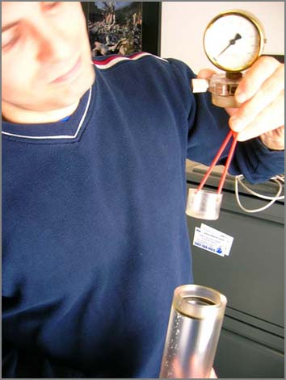
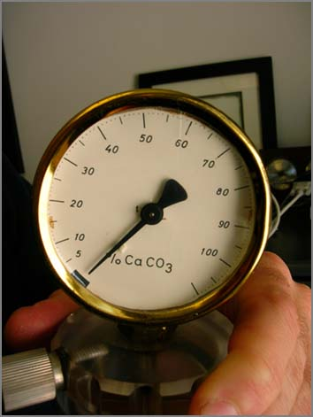
02.28.2008 08:17
Ntrip - streaming internet differential satellite corrections
This is the first I have run across Ntrip.
e.g. ts03_2_lenz.pdf: Networked Transport of RTCM via Internet Protocol (NTRIP) - Application and Benefit in Modern Surveying Systems, by Elmar LENZ, Germany
... "Networked Transport of RTCM via Internet Protocol" (Ntrip) stands for an application level proto-col streaming "Global Navigation Satellite System (GNSS)" data over the Internet. Ntrip is a generic, stateless protocol based on the Hypertext Transfer Protocol (HTTP/1.1) and the RealTime Streaming Protocol (RTSP). Ntrip is a reduced subset of HTTP/RTSP required for real-time data streaming. Ntrip communication usually takes place over HTTP/TCP/IP or RTSP/TCP/IP and RTP/UDP/IP connections. The default port is TCP 2101, but other ports can be used. This does not preclude Ntrip from being implemented on top of any other protocol on the Internet, or on other networks like modem connections or UDP-based transport respectively connection protocols. ...
e.g. ts03_2_lenz.pdf: Networked Transport of RTCM via Internet Protocol (NTRIP) - Application and Benefit in Modern Surveying Systems, by Elmar LENZ, Germany
02.28.2008 07:36
New artic fleets - reinforced vessels without escorts
Global Warming Melts New Sea Lanes for Norilsk, ConocoPhillips [bloomberg via marinelink]
... One reinforced ship is already in service and four are being built by Aker Yards for delivery by mid-2009, all using new hull designs that allow for bow- or stern-first sailing, depending on the thickness of the ocean surface. While Norilsk and others may benefit from the melting, Borodin says the ship orders were driven by cost calculations rather than global warming. Most of the Siberia route is navigable from June through September, and it may become the first trans-Arctic channel open to reinforced vessels, say scientists. ...
02.27.2008 16:00
python ctypes and finding libraries
See also: Porting - 2. Shared Code [finkproject.net]
I just put a Shapely package in fink for 10.5 and python 2.5. I had some trouble with allowing shapely to find the libgeos3 shared library. Fink does not set the DYLD_LIBRARY_PATH, so how is a ctype python package supposed to find the libraries? In shapely/geos.py, the library finding code looks like this:
I just put a Shapely package in fink for 10.5 and python 2.5. I had some trouble with allowing shapely to find the libgeos3 shared library. Fink does not set the DYLD_LIBRARY_PATH, so how is a ctype python package supposed to find the libraries? In shapely/geos.py, the library finding code looks like this:
elif sys.platform == 'darwin':
lib = find_library('geos_c')
if lib is None:
## try a few more locations
lib_paths = [
# The Framework build from Kyng Chaos:
"/Library/Frameworks/GEOS.framework/Versions/Current/GEOS",
]
for path in lib_paths:
if os.path.exists(path):
lib = path
break
else:
raise ImportError, "Could not find geos_c library"
lgeos = CDLL(lib)
free = CDLL(find_library('libc')).free
else:
Here is the library that it needs to find:
% fink list -i libgeos
i libgeos2 2.2.3-2007 Geometry Engine - Open Source
i libgeos2-shlibs 2.2.3-2007 Geometry Engine - Open Source
i libgeos3-shlibs 3.0.0-2 Geometry Engine - Open Source
i libgeosc1-shlibs 3.0.0-2 Geometry Engine - Open Source
% dpkg -L libgeosc1-shlibs | grep 'dylib'
/sw/lib/libgeos_c.1.4.1.dylib
% file /sw/lib/libgeos_c.1.4.1.dylib
/sw/lib/libgeos_c.1.4.1.dylib: Mach-O dynamically linked shared library i386
% otool -L /sw/lib/libgeos_c.1.4.1.dylib
/sw/lib/libgeos_c.1.4.1.dylib:
/sw/lib/libgeos_c.1.dylib (compatibility version 6.0.0, current version 6.1.0)
/sw/lib/libgeos-3.0.0.dylib (compatibility version 0.0.0, current version 0.0.0)
/usr/lib/libstdc++.6.dylib (compatibility version 7.0.0, current version 7.4.0)
/usr/lib/libgcc_s.1.dylib (compatibility version 1.0.0, current version 1.0.0)
/usr/lib/libSystem.B.dylib (compatibility version 1.0.0, current version 111.0.0)
% otool -hv /sw/lib/libgeos_c.1.4.1.dylib
/sw/lib/libgeos_c.1.4.1.dylib:
Mach header
magic cputype cpusubtype caps filetype ncmds sizeofcmds flags
MH_MAGIC I386 ALL 0x00 DYLIB 13 1648 NOUNDEFS DYLDLINK TWOLEVEL WEAK_DEFINES BINDS_TO_WEAK NO_REEXPORTED_DYLIBS
My temporary solution is to replace the line after Kyng Chaos:
PatchScript: << perl -pi -e 's|/Library/Frameworks/GEOS.framework/Versions/Current/GEOS|/sw/lib/libgeos_c.1.4.1.dylib|g' shapely/geos.py <<Then running the 2 second demo:
% fink install shapely-py25 % ipython In [1]: from shapely.geometry import Point In [2]: point = Point(-106.0, 40.0) In [3]: p = point.buffer(10.0) In [4]: print p POLYGON ((-96.0000000000000000 40.0000000000000000, -96.0481527332780303 39.0198285967043930, -96.1921471959676921 38.0490967798387203, -96.4305966426779122 37.0971532274553795, -96.7612046748871251 36.1731656763491074, -97.1807873565164471 35.2860326317400279, -97.6853038769745439 34.4442976698039800, -98.2698954663726312 33.65606 ...It works, but there has to be a better solution. Suggestions?
02.27.2008 10:07
Open Science - Publishing with Trac
Roberto has definitely one-upped me, which is a good thing. I tried
during my Phd to make my thesis complete autogenerate all the figures
from data to images. I had a lot of it working with a makefile
through to the pdflatex output. Too bad it doesn't still work. I
combined my thesis build system with my blog to make what I thought
was reasonably open research. Putting your research up on wiki is
definitely taking things up a notch.
http://trac.dealmeida.net/
I'm doing an experiment with my recent papers: each has a Trac instance, so that code and the article text (a LaTeX file) can be shared between colaborators using Subversion. Data is hosted on an Opendap server, running my trusty pydap. But the best part is that the whole process, from downloading data to composing the article pdf, is done through a Makefile. The Makefile creates a virtual environment, downloads the required Python modules, and bootstraps the analyses. Just type make and enjoy. . Now imagine if all scientists embraced the open-source philosophy of open collaboration and real meritocracy and did the same.
http://trac.dealmeida.net/
02.27.2008 09:32
Wired on the Cougar Ace salvage
This looks to be an interesting article: High Tech Cowboys of the Deep Seas: The Race to Save the Cougar Ace [Wired]
Image from the USCG:
Image from the USCG:
02.27.2008 06:01
Joyce's Kitchen in Newmarket is closing
If you haven't been to Joyce's Kitchen, you are really missing out.
Quick get over there before the place closes.
This is a total bummer! Newmarket landmark, Joyce's Kitchen to close [seacoastonline]
This is a total bummer! Newmarket landmark, Joyce's Kitchen to close [seacoastonline]
... Owner Joyce Russell said she thinks business has slowed down from construction, parking and access issues. The problems started about a year ago when the restaurant lost some parking spaces from the River Walk construction behind it. This past year's Exeter Street construction decreased business because people could not get through town as easily and the upcoming Main Street project factored into the decision to close, she said. The "frosting on the cake" are the recent barricades preventing access out of Joyce's parking lot through the Rivermoor Landing parking lot. Cars can now only get in and out from Water Street off of Main Street, Russell said. ... Breakfast is still available at Joyce's Kitchen at 13 Water St., until the end of March. Hours are Monday through Friday from 6 a.m. until noon. Saturdays from 6 a.m. until 1 p.m. and Sundays from 7 a.m. until 1 p.m.
02.26.2008 13:02
New Castle in the morning
I went out to New Castle this morning to work on a datalogger again.
Got some nice pictures. However, I am paying for using such a cheap
camera which has strong sperical distorion.
Janice was out on the R/V Gulf Challenger looking at the sand waves.
The UNH pier and support facilities are coming along.
The lighthouse looked very pretty this morning.
It was low tide, so here are the SML tide station stilling tubes that I posted previously.
Janice was out on the R/V Gulf Challenger looking at the sand waves.
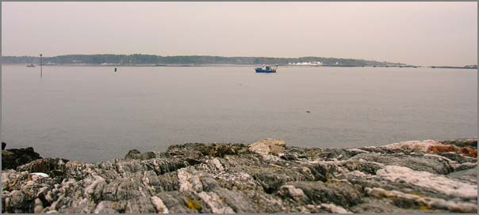
The UNH pier and support facilities are coming along.
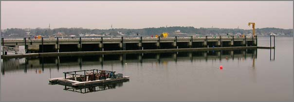
The lighthouse looked very pretty this morning.
It was low tide, so here are the SML tide station stilling tubes that I posted previously.
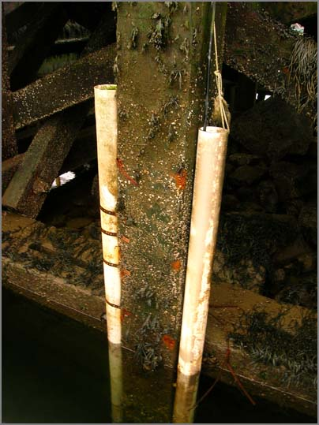
02.25.2008 20:49
CCOM/JHC 2007 Annual Report is out
As a part of our work at CCOM/JHC, we prepare an annual report on the
accomplishments of the year. We each prepair sizable reports on our
projects and then Larry M. leads the task of crafting the composite
document. The report this year weighs in at 94 pages. Some of my
work is reported in the "Electronic Chart of the Future." Be warned:
we do not cover all of the work occuring at the center in this report.
Performance and Progress Report, NOAA Ref No. NA0NOS4001153, Project Title: Joint Hydrographic Center, Report Period: 01/01/2007-12/31/2007, Principle Investigator: Larry A. Mayer.
Performance and Progress Report, NOAA Ref No. NA0NOS4001153, Project Title: Joint Hydrographic Center, Report Period: 01/01/2007-12/31/2007, Principle Investigator: Larry A. Mayer.
... The NOAA-UNH Joint Hydrographic Center was founded eight years ago to find ways to process the massive amounts of data coming from these new sonar systems at rates commensurate with data collection; that is, to make the data ready for chart production as rapidly as the data could be collected. As we begin to achieve this goal, our attention is also turning to the wonderful opportunity to utilize this massive flow of information into products that meet a wide range of needs, such as safer navigation, marine habitat assessments, fisheries management and national security. In this short period of time, we have built a vibrant Center with over 70 employees and an international reputation as the place, "where the cutting edge of Hydrography is now located" (Adam Kerr, Past Director of the International Hydrographic Organization in Hydro International). ...
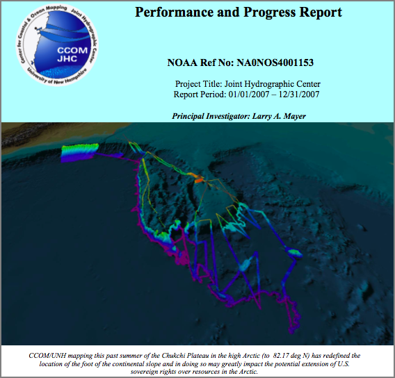
02.25.2008 14:59
openstreetmap with openlayers
This doesn't get me all the way, but it shows that what I want has got
to be possible. I'd like to have OpenStreetMap (osm) cached locally
for a small area and then rendered via OpenLayers. I put this demo
together in a couple minutes and is just the OpenLayers_Simple_Example
with the lat, lon variables changed. The key code:
openstreetmap-openlayers-NH.html
var lat= 43.08472
var lon=-70.775
...
maxExtent: new OpenLayers.Bounds(-20037508.34,-20037508.34,20037508.34,20037508.34),
maxResolution:156543.0399, units:'meters', projection: "EPSG:900913"} );
layerTilesAtHome = new OpenLayers.Layer.OSM.Osmarender("Osmarender");
openstreetmap-openlayers-NH.html
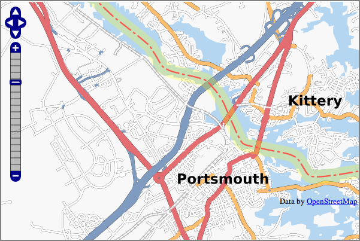
02.25.2008 12:54
ubuntu update troubles
I tried to update a ubunto 6.?? box to 7.10 over the last couple days.
This is a generic shuttle box. I did the update to 7.04 without
hassle. The reboot went fine, but the I tried to get to 7.10. I did
an update, but nothing. Then I tried again and it got wedged over
a set of wall paper images. Of all the useless...
NOTE: The ubuntu ntp settings are not good, so I made sure not to let the upgrade process change out ntp settings that Val put together.
First in the 6?? world:
NOTE: The ubuntu ntp settings are not good, so I made sure not to let the upgrade process change out ntp settings that Val put together.
First in the 6?? world:
% sudo apt-get install update-manager-core % sudo do-release-upgrade % sudo apt-get install language-pack-en % rebootnow try to jump from 7.04 to 7.10
% sudo apt-get autoremove % sudo apt-get install update-manager-coreHuh?
Errors were encountered while processing: ubuntu-artworkTry some stuff...
sudo apt-get update sudo apt-get upgrade sudo apt-get upgrade -f sudo apt-get -f installbut...
Preconfiguring packages ... (Reading database ... 141787 files and directories currently installed.) Unpacking gutsy-wallpapers (from .../gutsy-wallpapers_0.17_all.deb) ... dpkg: error processing /var/cache/apt/archives/gutsy-wallpapers_0.17_all.deb (--unpack): trying to overwrite `/usr/share/backgrounds/warty-final-ubuntu.png', which is also in package edgy-wallpapers dpkg-deb: subprocess paste killed by signal (Broken pipe) Preparing to replace base-files 4ubuntu2 (using .../base-files_4.0.0ubuntu5_i386.deb) ... Unpacking replacement base-files ... Errors were encountered while processing: /var/cache/apt/archives/gutsy-wallpapers_0.17_all.debMy solution:
sudo dpkg --install --force-overwrite /var/cache/apt/archives/gutsy-wallpapers_0.17_all.deb sudo apt-get upgrade -f sudo rebootAll happy now
cat /etc/lsb-release DISTRIB_ID=Ubuntu DISTRIB_RELEASE=7.10 DISTRIB_CODENAME=gutsy DISTRIB_DESCRIPTION="Ubuntu 7.10"
02.25.2008 11:35
noaadata 0.35 released
This is what I used for a realtime AIS demo last week. noaadata-py-0.35.tar.bz2 [661K] (down from 1.7M). The pypi entry
- No longer packaging the epydoc html in the tar. Create it locally if you want it.
- Cleanup of IMO met hydro message ice field. Description name fixes for other IMOs
- database.py: more verbose
- uscg.py: add get_station, get_contents
- django: add define_ais for creating AIS binary messages. Lots of work left to do
- doc/ais.bib: lots more references
- doc/templates: now includes python template/boilerplate file
- doc/configure-ais-logging.txt - new howto
- init.d/ais-forward: cleanup messages
- init.d/logais: added -m to mark time with no messages
- ais-db-rebuild-cache-tables: cleanup magicdate usage
- ais-net-to-postgis: add magicdate usage, add periodic clean even if nothing received
- ais-port-forward: minor cleanup, fix SBNMS stations, tweak bounding box
- ais_build_sqlite3.py is not working. why?
02.25.2008 10:19
Marine community thinking about ocean noise
The community is talking about noise in the water column...
In the Oceans, Underwater Noise Pollution is as Harmful as Oil Pollution [marinebuzz.com]
If you are interested in this topic, I urge you to dig into the academic literature on the topic. An easy starting point is the Impact of Human-made Sound publication page at the Cornell Bioacoustics Research Program. (Disclosure: I have a paper in-review with people from this group.)
In the Oceans, Underwater Noise Pollution is as Harmful as Oil Pollution [marinebuzz.com]
If you are interested in this topic, I urge you to dig into the academic literature on the topic. An easy starting point is the Impact of Human-made Sound publication page at the Cornell Bioacoustics Research Program. (Disclosure: I have a paper in-review with people from this group.)
02.25.2008 10:06
Cruising wikis
Navgear has some opinions on cruise wikis: Cruising
Wiki Shoot-Out #1 You'll need to scroll down to the end. Here are
the wikis listed:
- ActiveCaptain
- MyCruisingLog.com
- CaptainWiki
- CruiserLog.com
- Rose Point Coastal Explorer 2.0 wiki - not the actial site
02.25.2008 09:57
Maritime accidents 2x more likely
Maritime Accidents Now Twice As Likely [Maritime Accident Casebook]
... Dr. Torkel Soma, Principal Safety Consultant in DNV Maritime, says: "DNV's statistics shows that a ship is twice as likely to be involved in a serious grounding, collision or contact accident today compared to only five years ago. In addition, estimates show that also the costs of these accidents have doubled. Since this is the general trend for the international commercial fleet, the maritime industry needs to act on this immediately." ...
02.23.2008 20:44
prototype for web interface for defining AIS binary messages
I've used django to create a
quick prototype of a web interface designed to create AIS binary
message definition. When looking at this, know that it needs a lot more
work. I am also skipping a good number of important commands.
First the models.py:
Here is a quick spin through adding a field to a message:
This is far from a finished product, but it illustrates the concept. From here, a script could read the complete message definition and produce the XML description of that message. There is a lot missing here. For example, lookup tables for uint fields that want them. Additionally, there could be a lot of guidance stored in popup help windows.
It's a start.
First the models.py:
from django.db import models
#
class Type(models.Model):
name = models.CharField(maxlength=20)
def __str__(self):
return self.name
class Admin:
pass
#
class Unit(models.Model):
name = models.CharField(maxlength=10)
shortdescription = models.CharField(maxlength=30)
description = models.TextField()
refURL = models.URLField()
def __str__(self):
name = self.name
if len(name)==0: name = 'None'
return name + ' - ' + self.shortdescription
class Admin:
pass
#
class Aismsg(models.Model):
name = models.CharField(maxlength=20)
description = models.TextField()
msgnum = models.PositiveIntegerField()
dac = models.PositiveIntegerField()
fi = models.PositiveIntegerField()
def __str__(self):
return self.name + ' ('+str(self.dac)+':'+str(self.fi)+')'
class Admin:
pass
#
class Field(models.Model):
aismsg = models.ForeignKey(Aismsg)
name = models.CharField(maxlength=20)
description = models.TextField()
numberofbits = models.PositiveIntegerField()
type = models.ManyToManyField(Type)
unavailable = models.CharField(maxlength=120)
units = models.ForeignKey(Unit)
class Admin:
pass
Given that model, I asked django to create the database tables:
% createdb aisdef % python manage.py syncdbIt created a whole bunch of tables. Here are the key ones:
% psql aisdef
# \d
public | define_ais_aismsg | table | schwehr
public | define_ais_field | table | schwehr
public | define_ais_field_type | table | schwehr
public | define_ais_type | table | schwehr
public | define_ais_unit | table | schwehr
# \d define_ais_field
id | integer | not null default nextval('define_ais_field_id_seq'::regclass)
aismsg_id | integer | not null
name | character varying(20) | not null
description | text | not null
numberofbits | integer | not null
unavailable | character varying(120) | not null
units_id | integer | not null
I then preload some field types and units into the database:
% psql aisdef
INSERT INTO define_ais_type (name) VALUES ('bool');
INSERT INTO define_ais_type (name) VALUES ('uint');
INSERT INTO define_ais_type (name) VALUES ('int');
INSERT INTO define_ais_type (name) VALUES ('udecimal');
INSERT INTO define_ais_type (name) VALUES ('decimal');
INSERT INTO define_ais_type (name) VALUES ('aisstr6');
INSERT INTO define_ais_type (name) VALUES ('binary');
INSERT INTO define_ais_unit (name,shortdescription,description,"refURL") VALUES ('m','meters','long description','http://physics.nist.gov/cuu/Units/meter.html');
INSERT INTO define_ais_unit (name,shortdescription,description,"refURL") VALUES ('kg','kilogram','long description','http://physics.nist.gov/cuu/Units/kilogram.html');
INSERT INTO define_ais_unit (name,shortdescription,description,"refURL") VALUES ('K','kelvin','long description','http://physics.nist.gov/cuu/Units/kelvin.html');
INSERT INTO define_ais_unit (name,shortdescription,description,"refURL") VALUES ('s','second','long description','http://physics.nist.gov/cuu/Units/second.html');
INSERT INTO define_ais_unit (name,shortdescription,description,"refURL") VALUES ('','practical salinity scale','long description','http://en.wikipedia.org/wiki/Salinity');
INSERT INTO define_ais_unit (name,shortdescription,description,"refURL") VALUES ('Pa','Pascals','long description','http://en.wikipedia.org/wiki/Pressure');
Start the django development server and open the admin interface.
% python manage.py runserver % open http://127.0.0.1:8000/
Here is a quick spin through adding a field to a message:
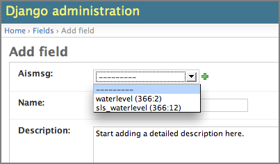
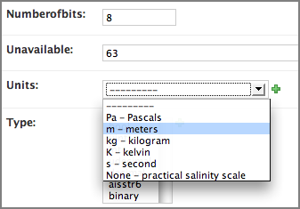
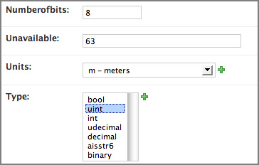
This is far from a finished product, but it illustrates the concept. From here, a script could read the complete message definition and produce the XML description of that message. There is a lot missing here. For example, lookup tables for uint fields that want them. Additionally, there could be a lot of guidance stored in popup help windows.
It's a start.
02.22.2008 09:57
Back up your web postings that you care about
I enjoy reading Bruce's essays. As a point of reference, my blog
exists on at 8 computers distributed between North CA, Southern CA,
and NH. And that is in addition to occasional backups to DVD and tape
backup deep store. If you care about what you write, back it up! If
you use LJ, Blogger, etc, go get a scrapper and suck it to your local
machine. wget will do the job is you don't mind the command line.
When the Internet Is My Hard Drive, Should I Trust Third Parties? by Bruce Schneier posted at Wired.
When the Internet Is My Hard Drive, Should I Trust Third Parties? by Bruce Schneier posted at Wired.
... Few, if any, of the people who made Wine Therapy their home kept backup copies of their own posts and comments. I'm sure they didn't even think of it. I don't think of it, when I post to the various boards and blogs and forums I frequent. Of course I know better, but I think of these forums as extensions of my own computer -- until they disappear. . As we rely on others to maintain our writings and our relationships, we lose control over their availability. Of course, we also lose control over their security, as MySpace users learned last month when a 17-GB file of half a million supposedly private photos was uploaded to a BitTorrent site. . In the early days of the web, I remember feeling giddy over the wealth of information out there and how easy it was to get to. "The internet is my hard drive," I told newbies. It's even more true today; I don't think I could write without so much information so easily accessible. But it's a pretty damned unreliable hard drive. ...
02.22.2008 09:51
John Kerry on the North Atlantic Right Whales
A message to John Kerry: "Come talk to us."
John Kerry - Save The Whales [gcaptain/IAR News]
John Kerry - Save The Whales [gcaptain/IAR News]
... Senator John Kerry has proposed speed limits for specific vessels that pass across the migratory paths of the critically endangered North Atlantic right whale. . While the rule was first proposed in February 2007, Mr Kerry has called for immediate action to be taken to protect the whales' population. . "The Bush administration needs to stop dragging their feet, follow the best available scientific evidence, and take immediate action to protect endangered right whales," he said. ...
02.22.2008 09:32
Cascade allision with bridge in SF Bay
The Anatomy of Allisions [gcaptain.com]
... The CASCADE's allision with the bridge at Point San Quentin (San Rafael-Richmond Bridge) presents a different situation. The tug PACIFIC WOLF, an 111 foot, 4100 horsepower tug and the CASCADE an OPA 90 double hull 300 foot barge are reported to be owned and operated by K-Sea Transportation. The tug DELTA DEANNE a tractor tug,108 feet in length with 4400 horsepower is owned by BayDelta Maritime. The grieved appears to be the bridge i.e., the state of California. Responsibility and fault will have to be determined. Courts have defined the duties and responsibilities of tug masters and therefore the question of who was in charge will be of primary concern. . The number of recent accidents involving petroleum product is unquestionably going to generate political rhetoric and probably some unnecessary rule making unless the reason these accidents occurred is determined. There is a commonality. The existing laws, rules, regulations and procedures are more than adequate if adhered to. The process of determining the cause, or reasons, is complex as it indicates that those in the pilot house are not alone in their failures. The operational policies, procedures and the principles of proper seamanship and management are published and essentially known, but they are frequently over looked, or misunderstood. ... Except for ground vehicles, one should know that maritime accidents exceed all other forms of transportation accidents The daily number of maritime incidents is astonishing. ...
02.22.2008 09:27
Ambidextrous on innovation
Wendy J. helped to launch the Ambidextrous magazine. It is well worth
a read if you are a designer. The magazine also has a blog. This
week's post: Innovative companies
don't listen to their users?
... In fact, Verganti finds that companies that innovate successfully (defined by the researchers as winning a design award) use a "see and launch" strategy, employing "some sort of research processs," usually trend finding and scenario building rather than focus groups, and then launching products based on that research. . Less successful was the "launch and see" approach, where lots of products are put out there, relying on customers' ability to hone in on the good stuff so market numbers can decide. This reminds me of Google's mythical "launch early, launch often" process. The study also found "wait and see" - imitating trends that are successful in the market - an expensive way to innovate since getting in on the game early enough means you can't really call the winners, so you end up copying a lot. . "Apple is a company that is pushed by a vision," Verganti says. "Steve Jobs has said that the market doesn't always know what it wants. Companies that do radical innovation do not listen to users; they eventually value market feedback, but first they propose things to the users." ...
02.21.2008 21:58
creating movies from images files on mac osx 10.5 from a script
I you want to convert image files into an animation/movie file and be
able to script the process, here are some options. The simple not
command line way to do this is to buy quicktime pro and assemble a
movie from files. I will assume for the following, that there a bunch of
frames in the current directory named foo-NNN.png where NNN is a numbered
sequence padded with zeros (e.g. foo-001.png, foo-002.png, etc)
The tool is imagemagick. It can produce a couple of types of files. The simplest is an animated gif.
The tool is imagemagick. It can produce a couple of types of files. The simplest is an animated gif.
% fink install imagemagick % convert -delay 50 foo-???.png foo.gif % open -a /Applications/Safari.app foo.gifThe delay will cause the movie to render slower. What about a true movie file?
convert foo-???.png foo.mpeg sh: mpeg2encode: command not found convert: Delegate failed `"mpeg2encode" "%i" "%o"'.Oops! We need to install a codec:
% fink install mpeg2vidcodecNow make a movie:
% convert -delay 50 foo-???.png foo.mpg % open foo.mpgA second program is ffmpeg:
% fink install ffmpeg % ffmpeg -i foo-%d.png foo2.mpg % open foo2.mpgYup, there are more ways. mpeg_encode was just too complicated for this post. You can start searching with fink:
% fink apropos movie % fink apropos mpeg % fink apropos mpg % fink apropos video
02.21.2008 17:40
Tomorrow (Friday) David Wiley speaking at CCOM at 2 PM
If you are on the UNH campus, come join us over in CCOM for a talk by
Dave Wiley. CCOM/JHC SEMINAR ANNOUNCEMENT:
Friday, February 22nd, 2:00 p.m.
Chase Ocean Engineering Lab
Dr. David Wiley
Research Coordinator,
Stellwagon Bank National Marine Santuary
Endangered Whale Conservation Research in
the Stellwagon Bank National Marine Sanctuary
Video Classroom 130
All are welcome to attend
Dave works with quite a few people at CCOM on a whole range of really
exciting projects. There is no image to go with his talk, so here
is one of tagging Humpbacks.
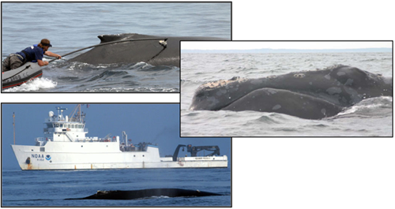
02.20.2008 13:03
Empty LNG vessel to go the the Boston deep water terminal
Excelerate Sends LNG Vessel to Northeast Gateway [lnglawblog.com]
Platts LNG Daily [subscription required] reports that Excelerate Energy has sent one of its LNG vessels, without an LNG cargo, to its Northeast Gateway LNG terminal. Excelerate's COO told Platts that the vessel would attach the submersible buoys to the vessel's onboard regasification apparatus as part of the commissioning process for the facility.
02.20.2008 07:09
incron - running scripts when files change
Debian Administration has a nice article this morning: Running
programs when filesystem events occur
incron is available for Ubuntu. I am thinking of using this to drive plotting on my data logging boxes. Realtime plotting is great, but often what I want is to know which log file has some key event. Might as well trigger on the log rotate to make that plot. I might just stick to cron/anacron, but this is fun to think about. I am also thinking about scp drop boxes for files that need to be loaded into mapserver.
incron is available for Ubuntu. I am thinking of using this to drive plotting on my data logging boxes. Realtime plotting is great, but often what I want is to know which log file has some key event. Might as well trigger on the log rotate to make that plot. I might just stick to cron/anacron, but this is fun to think about. I am also thinking about scp drop boxes for files that need to be loaded into mapserver.
02.20.2008 07:01
Who invented sonar?
Who Invented Sonar - A Controversy [marinebuzz.com]
Now there is a report from University of Alberta which says that Robert Boyle is the one who actually came up with the first working model of sonar by 1917, beating out the other groups. He is being ignored by history.If you are in the know, head over to marinebuzz and make a comment.
02.20.2008 06:09
Stanford Tuition
Back in the day, Stanford actually had no tuition to pay. Those times
are long gone, but check this out:
Stanford University today announced the largest increase in its history for its financial aid program for undergraduates. . Under the new program, parents with incomes of less than $100,000 will no longer pay tuition. Parents with incomes of less than $60,000 will not be expected to pay tuition or contribute to the costs of room, board and other expenses. ...
02.19.2008 12:56
Getting the color table entries from an index color image
Rob B. helped me figure this one out:
% ipython
from osgeo import gdal
f = gdal.Open('a.gif')
b = f.GetRasterBand(1)
c = b.GetRasterColorTable()
for i in range(c.GetCount()):
print c.GetColorEntry(i)
The output looks something like this:
(0, 0, 0, 255) (255, 255, 255, 255) (135, 135, 135, 255) (220, 242, 252, 255) (184, 229, 246, 255) (133, 160, 165, 255) (171, 192, 194, 255) (89, 93, 91, 255) (224, 227, 140, 255) (252, 252, 148, 255) (247, 244, 90, 255) (53, 51, 40, 255) (130, 113, 55, 255) (198, 143, 80, 255) (211, 163, 117, 255) (255, 255, 255, 0)
02.18.2008 20:14
gdalwarp with transparency
Here is the gdal command to convert a UTM Zone 19N backscatter image
with white for no data into geographic with transparency for no data.
gdalwarp -dstalpha -srcnodata 255 -dstnodata 0 \ -s_srs EPSG:32619 -t_srs EPSG:4326 input-32619.tif output-4326.tifI still need to figure out if there is a way to make mapserver present the best quality rescaled images.
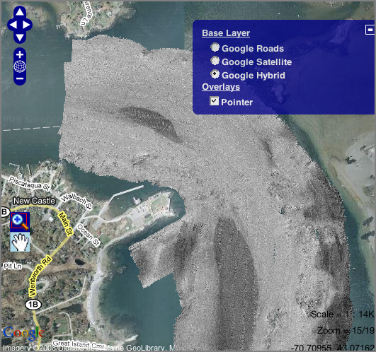
02.18.2008 16:04
AIS binary message registry
I finally have put together a very rough prototype of what the html
version of the AIS binary message regristry might look like. Regional
authorities would submit the XML definitions of their messages to
IALA. From there, software would create several lists of binary
messages. The example here is the master list of all known messages,
but note that I have only included a few messages for demostration
purposes. I need to structure the message descriptions such that the
first sentence is a succinct and self contained description for the
top level table (much like doxygen, javadoc, or epydoc.
ais-bin-msg-registry-v0.html
Which starts off with a list of messages something like this. Please imagine a better look with CSS and tables for the final product.
ais-bin-msg-registry-v0.html
Which starts off with a list of messages something like this. Please imagine a better look with CSS and tables for the final product.
- Imo_met_hydro (001:11): IMO meteorological and hydroglogical data. SN/Circ.236 Annex 2.
- imo_fairway_closed (001:13): IMO fairway closed. SN/Circ.236 Annex 2, page 4, App 3
- imo_tidal_window (001:13): IMO tidal window. SN/Circ.236 Annex 2, p5, Appl 3
- ris_waterlevel (???:24): River Information System water level report
- sls_waterlevel (366 316:1:3): St Lawrance Seaway water level message
- sls_weatherreport (366 316:1:2): St Lawrance Seaway wind information
02.18.2008 14:04
New Castle tide gauge/water level
Andy M. and I went out to New Castle to work on the tide/ais station.
Here are some pictures of the station. Andy is still working towards
getting all the hardware installed in the rack. Andy, Noel, and I got
a new heavy duty power UPS up into the loft. That thing weighs a ton!
Here is the location of the sensors. The radio modem antenna serial line is over to the right, just in front of the white UNH boat.
Here are the two stilling tubes for the tide gauges:
We had to switch sensors to the backup today. The first is giving good temp data, but the water level is basically a random number.
Here is the location of the sensors. The radio modem antenna serial line is over to the right, just in front of the white UNH boat.
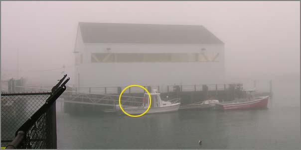
Here are the two stilling tubes for the tide gauges:
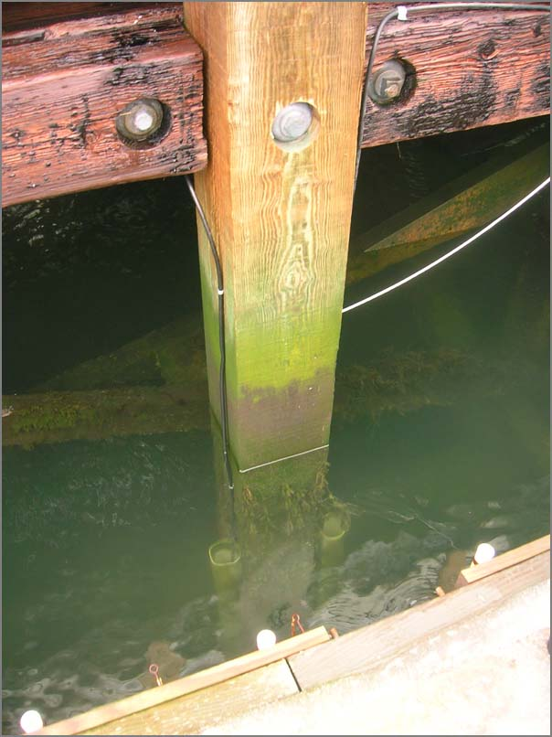
We had to switch sensors to the backup today. The first is giving good temp data, but the water level is basically a random number.
02.18.2008 12:33
Upgrading Ubuntu to 7.10 ... the next server
This is a little Dell 745 box. The update to 7.10 is now complete and
the station responds to ssh. Last Friday, I did the update process:
sudo apt-get update sudo apt-get upgrade sudo apt-get install update-manager-core sudo do-release-upgradeI rebooted on Saturday and the machine never came back. There was a strange kernel panic VFS error on the screen. I booted to an older kernel in rescue mode via Grub (hit the ESC key). I then got the machine to a console. apt-get update gave an error, so I redid the whole config which takes about 20 minutes.
dpkg --configure -a apt-get update apt-get upgradeI rebooted and the machine seems okay now. I then tried to install the keyspan driver that I got on the net, but the deb revision numbers are different. I forced the install...
dpkg --force-depends -i keyspan-ubuntu-2.6.22.47.debIt was confusing with the 4 port keyspan, so I swapped it for my 1 port keyspan. Then configured the serial device:
mknod /dev/ttyUSB0 c 188 0 chgrp dialout /dev/ttyUSB? chmod g+w /dev/ttyUSB?Remotely connect and start the logger...
ssh -p xxx somewhere -v ~schwehr/projects/noaadata/scripts/serial_logger.py --port=/dev/ttyUSB0I the future, we need to buy only Linux friendly usb-serial devices.
02.16.2008 11:04
3D geomapapp
Last week, we were lucky enough to have Andrew Goodwillie pay a visit
to CCOM/JHC. In his afternoon talk, he showed us the demo version of
the new 3D GeoMapApp. The program goes by the name wwGeoMapApp right
now. The ww stands for the NASA WorldWind source tree. It is great
to see the power of tools crossing boundaries. The 2D interface to
GeoMapApp is good, but it is great to see that they are heading
towards allowing either 2D or 3D access. Here are some screen shots
I made of the demo version.
When the program is first run, there is a new projection option on the left for a globe.
Here is the initial view of the Earth, just like in WorldWind, GE, ossimPlanet, and other 3D globe viewers.
A 3D view of the continental slope off the US East Coast with vertical exageration (VE) turned up.
The power of these applications comes from the datasets available. Here, I load up the PetDB Bedrock Chemistry layer.
Looking at a PetDB sample along the Mid Atlantic Ridge.
And to top it off, these layers are implemented as OGC WFS/WMS data sources: http://www.marine-geo.org/services
When the program is first run, there is a new projection option on the left for a globe.
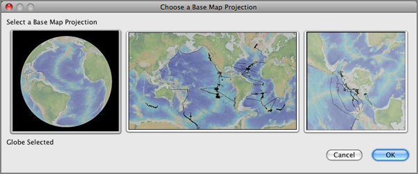
Here is the initial view of the Earth, just like in WorldWind, GE, ossimPlanet, and other 3D globe viewers.
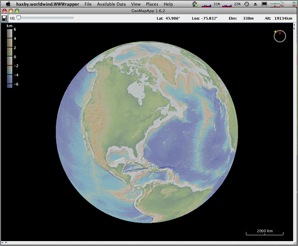
A 3D view of the continental slope off the US East Coast with vertical exageration (VE) turned up.
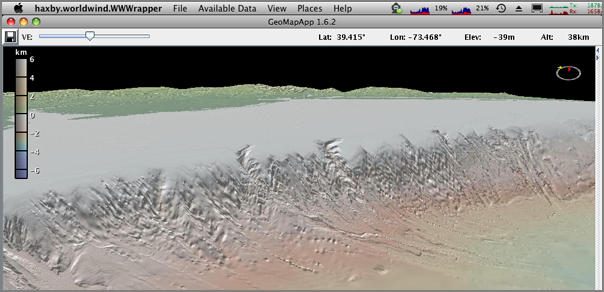
The power of these applications comes from the datasets available. Here, I load up the PetDB Bedrock Chemistry layer.
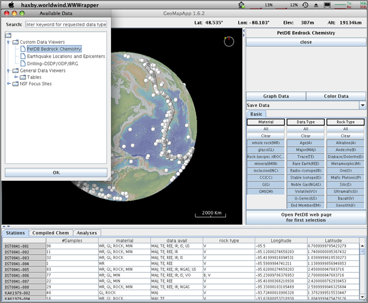
Looking at a PetDB sample along the Mid Atlantic Ridge.
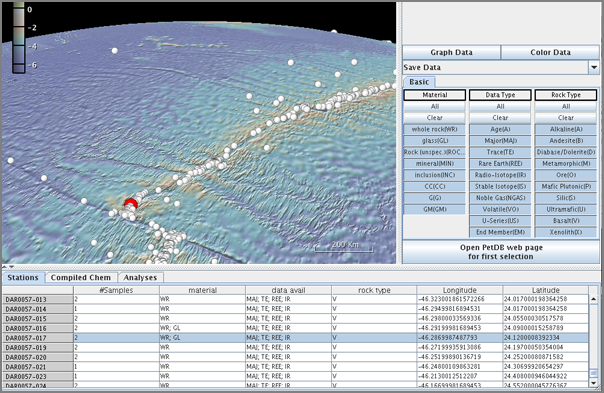
And to top it off, these layers are implemented as OGC WFS/WMS data sources: http://www.marine-geo.org/services
02.15.2008 16:52
TiddlyWiki
Roland just showed me TiddlyWiki. This is one of the
coolest bits of software that I have seen in ages. From the page...
you need to actually go to the above link to grab the software.
Because TiddlyWiki is a single HTML file, you've actually already downloaded the entire software just by viewing this site. If you want to be able to SaveChanges, you can save your own blank TiddlyWiki to your local drive by right clicking on this link to empty.html and selecting 'Save link as...' or 'Save target as...'. You can choose where to save the file, and what to call it (but make sure that it's saved in HTML format and with an HTML extension).
02.15.2008 16:50
NAIS coverage areas with descriptions
Just ran into this figure on the internet today:
MDA_USCG [ndia.org] from the United States Coast Guard Maritime Domain Awareness Program Integration Office, 19 Apr 2005. (it is a bit old)
MDA_USCG [ndia.org] from the United States Coast Guard Maritime Domain Awareness Program Integration Office, 19 Apr 2005. (it is a bit old)
This graphic depicts the current status of USCG AIS projects underway or planned, and their incorporation into the Common Operational Picture (COP). The Coast Guard Research and Development Center has AIS projects in the Pacific Northwest, California, Hawaii, the Eastern seaboard and Florida. Vessel Traffic Service locations are abbreviated beginning with "VTS" followed by letter abbreviations for each location. For instance, the Vessel Traffic Service in Prince William Sound Alaska is identified by VTSPWS. SCC Charleston is an interagency Sector Command Center and SCC-J represents the Joint Navy/Coast Guard Sector Command Centers in San Diego and Norfolk. The circles shown in solid green are currently incorporated into the COP. Those shown in hatched green are operational AIS sites which do not yet feed into the COP. The blue circles are AIS projects not yet operational.
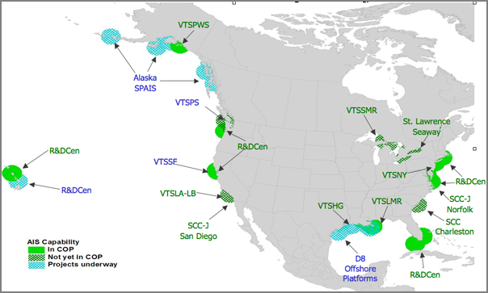
02.15.2008 16:20
Congressional Reseach Report - Ship Navigation in Harbors: Safety Issues
RL34365 Ship
Navigation in Harbors: Safety Issues [opencrs]
On November 7, 2007, a container ship collided with a tower of the San
Francisco-Oakland Bay Bridge, spilling 58,000 gallons of the ship's
bunker fuel into the Bay. The incident has raised questions about the
role of maritime pilots and vessel traffic services (VTSs) in
preventing accidents in U.S. harbors, such as: Is there a need for
further independent oversight of pilot performance? Could VTSs operate
more like Air Traffic Control centers? Should the pilot and ship
captain be required to agree on a passage plan before transiting a
harbor? Because of the additional challenges of navigating large ships
through the constricted waters of a harbor, most U.S. ports require
shipping lines to hire a maritime pilot. Maritime pilots, through a
lengthy apprenticeship process and many years of experience, have
gained intimate knowledge of the navigational requirements of a
particular harbor. Despite the federal government's prominent role in
regulating interstate commerce, Congress has largely left it to the
various coastal states to regulate pilotage. Pilots are licensed by
the state for ships engaged in foreign trade ("registered" vessels
carrying international cargo), which accounts for the vast majority of
port calls. Typically a state pilot board oversees the hiring,
training, and performance of pilots, as well as setting pilotage rates
charged to the shipping lines. The U.S. Coast Guard has jurisdiction
only over pilots of ships engaged in domestic trade and the courts
have ruled that the Coast Guard does not have the authority to suspend
or revoke the license of pilots for violations while piloting a
foreign-trade ship. To assist pilots, the busiest U.S. ports have
established VTS stations to monitor ship traffic and provide relevant
information to pilots, such as the location of other ships. While
often compared to an air traffic control tower, a VTS is not directly
involved in the movement of vessels and is more accurately described
as an advisory service than a traffic control center. Ever-larger
ships, difficult or challenging slow-speed handling characteristics of
some of these ships, and rising port traffic that is predominantly
foreign-flagged have led to proposals concerning pilotage, VTSs, and
other safety-related navigation services in U.S. ports. Given the
federal interest in marine environmental protection and the Coast
Guard's mission to ensure the safety of shipping in U.S. waters, some
experts have advocated stronger federal oversight of pilots. They
recommend that the Coast Guard or a national commission establish
national standards for pilot training and proficiency or that the
Coast Guard be given disciplinary authority over state-licensed
pilots. State pilots resist greater federal oversight, arguing that
the unique geography and navigational requirements of each port
justifies local oversight. Whether VTSs should exert more direct
control over vessel movement is also raised as a safety measure, but
most acknowledge that an experienced on-board mariner is probably in
the best position to direct a vessel's movement. Requiring that a
pilot and ship captain first agree on a harbor passage plan,
investigating language difficulties between pilots and foreign crews,
and Coast Guard rotational staffing practices, are other issues
policymakers may examine in assessing the safety of ship navigation in
U.S. harbors.
02.15.2008 14:56
updating ubuntu boxes remotely
Roland and I updated one of our Ubuntu based servers remotely this
morning. The process went pretty well accept for the box having
multiple ethernet ports and the update swapped which was eth0 and
eth1. Fun. But at least the box has a 3rd ethernet port which is a
remote administration card from Dell, so we could see the console
without having to be let into the locked server room. Note to Dell:
please stop making your tools require MS Internet Explorer. That is
just dumb. The Ubuntu update page gave us almost all of the
instructions we needed:
http://www.ubuntu.com/getubuntu/upgrading
This basically consists of doing:
http://www.ubuntu.com/getubuntu/upgrading
This basically consists of doing:
sudo apt-get update sudo apt-get upgrade sudo apt-get install update-manager-core sudo do-release-upgradeThe first server we upgraded was running 6.10 (Edgy Eft). When we upgraded, this got us up to 7.04. We then looped back through the above process and that got us up to 7.10:
cat /etc/lsb-release DISTRIB_ID=Ubuntu DISTRIB_RELEASE=7.10 DISTRIB_CODENAME=gutsy DISTRIB_DESCRIPTION="Ubuntu 7.10"We had to update trac projects:
trac-admin /var/trac/projects/projectname upgradeThere was also a little tweaking with apache2 where we removed the * from the VirutalHost entries and replace them with the host name.
02.14.2008 08:09
USCG Updates
Power Restored on Catalunya Spirit [coastguard news]
Port of Brunswick Closed to Deep Draft Vessels [coastguard news]
Port of Brunswick Closed to Deep Draft Vessels [coastguard news]
SAVANNAH, Ga. - The Coast Guard Captain of the Port for Brunswick, Ga., has closed the port to deep-draft vessels Wednesday at 6:15 p.m. following a grounding that occurred earlier in the day. . A survey team from the U.S. Army Corps of Engineers is scheduled to arrive Thursday morning to ensure the channel is safe for deep draft vessel to transit. After the survey, the Captain of the Port will re-evaluate the decision to keep the port closed to deep-draft vessels. . At approximately 7:30 a.m. Wednesday the captain of the motor vessel Centaurus Leader reported it had run aground on the north side of the Brunswick River while it was transiting in-bound to the Colonels Island terminal. ...This gets back to the idea that I have discussed with a number of groups about getting echosounder data back from vessels as they transit areas. In shallow water, we probably do not want to use any of this data for charting, but we could use it to identify changes in channels that require re-surveying by a qualified hydrographic surveyor.
02.13.2008 17:59
Hobu on GeoDjango
Hopping on the GeoDjango Bandwagon [hobu.biz]
I've got a copy of GeoDjango checked out on my laptop, but I haven't sorted out the troubles with libgeos[23] in fink and straight django will get me through my current project. I can't wait to give it a try.
You should also read: The Python Web Framework [cmlenz.net] back in `06.
He has some good points about some difficulties with django.
I've got a copy of GeoDjango checked out on my laptop, but I haven't sorted out the troubles with libgeos[23] in fink and straight django will get me through my current project. I can't wait to give it a try.
You should also read: The Python Web Framework [cmlenz.net] back in `06.
He has some good points about some difficulties with django.
02.13.2008 11:48
AIS Simulator
Panbo has a writeup of AIS Simulator: Kagstrom's
AIS Simulator, and good B news
Remember too that you can use noaadata to craft AIS NMEA messages. I've been thinking about creating a fuzz test tool for AIS tools. It would work in two modes. The first is to take the message definitions and create random AIS NMEA strings that will decode, but have random values filled out in the fields. The second is to generate random NMEA and NMEA like messages. I need to have software that will not crash if there is line noise on the serial connection (which is rare, but does happen) or if the receiver decides to output something funky. It shouldn't be too hard to do this with the mechanisms already in the python message code that I have.
Remember too that you can use noaadata to craft AIS NMEA messages. I've been thinking about creating a fuzz test tool for AIS tools. It would work in two modes. The first is to take the message definitions and create random AIS NMEA strings that will decode, but have random values filled out in the fields. The second is to generate random NMEA and NMEA like messages. I need to have software that will not crash if there is line noise on the serial connection (which is rare, but does happen) or if the receiver decides to output something funky. It shouldn't be too hard to do this with the mechanisms already in the python message code that I have.
02.13.2008 10:19
CCOM on Wired Again
Arctic Mapping May Bolster US Claims [wired.com... actually AP]
The New York Times has the video linked in, but I am curious why there is a NASA/UIUC credit by the video? Arctic Melt Yields Hints of Bigger U.S. Seabed Claim [dotearth.blogs.nytimes.com]
... Bathymetric soundings taken last year showed the foot of Alaska's continental slope extending more than 100 nautical miles farther from the U.S. coast than previously believed, according to the National Oceanic and Atmospheric Administration. . "We found evidence that the foot of the slope was much farther out than we thought," said Larry Mayer, the chief scientist for the expedition last year. "That was the big discovery." ...No pictures to go with the story. Bummer.
The New York Times has the video linked in, but I am curious why there is a NASA/UIUC credit by the video? Arctic Melt Yields Hints of Bigger U.S. Seabed Claim [dotearth.blogs.nytimes.com]
02.13.2008 10:14
Drifting LNG now being towed by tugs
Unified command continues to assist disabled LNG tanker [coastguardnews.com]
BOSTON - The Unified Command at Coast Guard Sector Boston is continuing to monitor and assist the Liquefied Natural Gas tanker Catalunya Spirit, which lost propulsion and became disabled east of Cape Cod Monday morning. . The Catalunya Spirit is about 33 miles east of Chatham, Mass., and is being towed by tugs Freedom and Iona McAllister, traveling about four miles-per-hour in a northwesterly direction, parallel to shore. Additionally, the Coast Guard Cutter Escanaba, the Maine Responder and Atlantic Salvor are also on scene. . The Catalunya Spirit has restored some electrical power to the vessel's switchboards; however, full power has not yet been restored to the vessel. ...and LNG Ship Disabled off Cape Cod [marinelink.com]
... Teekay Corporation, which operates the Catalunya Spirit, contracted four tugboats and three technical representatives to assist the tanker. The tugboats Freedom and Liberty arrived on scene with the tanker about 10 p.m., Monday. The Freedom placed the Catalunya Spirit under tow, stopping the tanker's southeasterly movement, and is slowly heading west to a temporary offshore location, while conducting repairs. . The tug Iona McAllister is also on scene standing by. The salvage tug, Atlantic Salvor, is expected to arrive at 1 p.m., Tuesday to assist as necessary. ...
02.12.2008 21:04
H2 Zoom
Today, Briana and I went to the NH Adobe Users
Group and saw a presentation by Andy Dolph on Adobe's two
offerings for sound editing. He gave a great presentation. Even
better, were his discussions with the group about processes and tools
(harware)for working with sound. He suggested two products that I had
never heard of, but I'm not really a sound person, so that means
nothing. These things are really awesome. A H4
was passed around, but unless you are recording music, he recommented
the Samson
H2.
From the companies' website:
I need to break out the ipod audio recording attachment and mic that I have and play with sound some more.
From the companies' website:
I need to break out the ipod audio recording attachment and mic that I have and play with sound some more.
02.12.2008 08:57
Mac OSX 10.5.2 update
I just installed the Mac OSX 10.5.2 update that came out yesterday.
The 5 minutes of running it review... go Apple! The X11 fixes are in
the update. Switching focus with Apple-Tab or clicking on the dock no
longer requires doing it 2x to get windows to the front. And, having
middle mouse button emulation work again lets highlight and paste
within x11 work without having to attach an external mouse.
The X11 server:
% xdpyinfo vendor string: The X.Org Foundation vendor release number: 10300000 .Org version: 1.3.0 ...The kernel:
% uname -a Darwin laptop 9.2.0 Darwin Kernel Version 9.2.0: Tue Feb 5 16:13:22 PST 2008; root:xnu-1228.3.13~1/RELEASE_I386 i386 i386 MacBookPro3,1 Darwin
02.12.2008 08:15
LNG Tanker Disabled off Cape Code
Looking at the track of the vessel, it is headed East, away from the
SBNMS and Boston.
Natural gas tanker disabled and adrift 35 miles off Cape Cod
Natural gas tanker disabled and adrift 35 miles off Cape Cod
BOSTON - The Coast Guard is monitoring and assisting a Liquefied Natural Gas tanker, which lost propulsion and is disabled and adrift with 29 people aboard approximately 35 miles east of Chatham, Mass., today. . The vessel is not in immediate danger and is drifting away from Cape Cod. . The 933-foot tanker Catalunya Spirit, carrying a full load of LNG from Trinidad and Tobago to Boston, became disabled about 3 a.m., this morning. . The tanker crew is making hourly situation reports to Sector Boston. Additionally, Air Station Cape Cod is planning to deliver a Coast Guard marine inspector and a technical representative to the Catalunya Spirit today. The Coast Guard Cutter Escanaba is on scene with the tanker to assist with communication. . Teekay Corporation, the company that operates Catalunya Spirit, has contracted two tug boats to assist. The tugs are expected to arrive on scene with the Catalunya Spirit at 11:30 p.m. A second Coast Guard marine inspector is aboard one of the tugs. . Current weather is 30-35 knot winds with 12 foot seas and is forecast to diminish overnight. . "As part of our response plan, we've notified our National Strike Team, and we're coordinating salvage and pollution response assets," said Capt. Gail Kulisch, Captain of the port of Boston. "A very comprehensive safety system has been developed by the Coast Guard in conjunction with port partners and the shipping company to minimize the risk to the marine environment and public safety."
02.11.2008 20:12
Wave tank area gets a wireless projector
Andy M. has mounted a projector with a wireless link in the high bay
area between the two big tanks. Here you can see the projector on a
vertical i-beam. A wave staff is measuring the waves propagating down
the tank from right to left.
Here you can see the waves heading into screens that dissipate the energy. Note that I took this without a flash. As a results, the waves have a smeared texture from the long exposure.
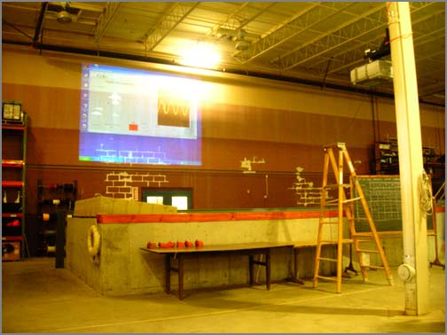
Here you can see the waves heading into screens that dissipate the energy. Note that I took this without a flash. As a results, the waves have a smeared texture from the long exposure.
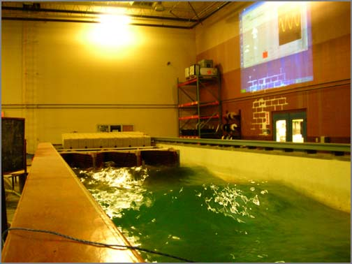
02.11.2008 15:31
NOAA news items - JHC Artic Data
Two separate NOAA news items...
First is about CCOM/JHC. This would explain what I heard in the hallways this morning. UNH-NOAA Ocean Mapping Expedition Yields New Insights into Arctic Depths
 Get the data
Get the data
Here just a teaser: Pock marks at 1600 ft.
The second is an announcement about the NOAA Budget: NOAA Budget to Fund Ocean, Climate Priorities
First is about CCOM/JHC. This would explain what I heard in the hallways this morning. UNH-NOAA Ocean Mapping Expedition Yields New Insights into Arctic Depths
New Arctic sea floor data released today by the University of New Hampshire and the National Oceanic and Atmospheric Administration suggests that the foot of the continental slope off Alaska is more than 100 nautical miles farther from the U.S. coast than previously assumed. . The data, gathered during a recent mapping expedition to the Chukchi Cap some 600 nautical miles north of Alaska, could support U.S. rights to natural resources of the sea floor beyond 200 nautical miles from the coast. . "We found evidence that the foot of the slope was much farther out than we thought," said Larry Mayer, expedition chief scientist and co-director of the Joint Hydrographic Center at UNH. "That was the big discovery." ...
Here just a teaser: Pock marks at 1600 ft.
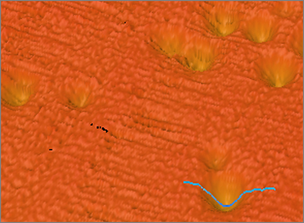
The second is an announcement about the NOAA Budget: NOAA Budget to Fund Ocean, Climate Priorities
...
The $4.1 billion request represents a 7.7 percent increase over the
President's FY 2008 request and a 5.2 percent increase over the FY
2008 budget passed by Congress.
...
Specific budget highlights include:
* $31.8 million to implement new requirements under the
Magnuson-Stevens Fisheries Conservation and Management
Reauthorization Act of 2006 designed to end overfishing
* $7 million to improve our understanding of the oceans through
the Integrated Ocean Observing System
* $4 million to clean up dangerous marine debris
* $5.4 million to restore streams and rivers by removing obsolete dams
* $5.3 million to improve hurricane forecasts
02.11.2008 09:23
Apple's file merge
Update: Thanks to Loic for pointing out opendiff to me. It
fires off FileMerge with two files.
Update2: Updating to Mac OSX 10.5.2 and doing a fink rebuild qt3-shlibs and then fink rebuild xxdiff gives me a stable xxdiff.
Apple's XCode has a nice diff/merge tool. It's pretty and until they fix their xserver so it is not so grouch, xxdiff has a tendency to freak out occasionally on window resize events.
It seems to understand the layout of python code. Nice!
And you can then take an action for each chunk.
opendiff template.py template2.pyFrom the manpage, it looks like it will do subdirectories too. Nice!
SYNOPSIS
opendiff file1 file2 [-ancestor ancestorFile] [-merge mergeFile]
opendiff dir1 dir2 [-ancestor ancestorDirectory] [-merge mergeDirectory]
...
If the -ancestor flag is given, FileMerge will compare the two files or
directories to a common ancestor. This is useful if two people indepen-
dently modify copies of a single original file or directory.
Update2: Updating to Mac OSX 10.5.2 and doing a fink rebuild qt3-shlibs and then fink rebuild xxdiff gives me a stable xxdiff.
Apple's XCode has a nice diff/merge tool. It's pretty and until they fix their xserver so it is not so grouch, xxdiff has a tendency to freak out occasionally on window resize events.
open /Developer/Applications/Utilities/FileMerge.appYou can drag and drop two files or browse for them.
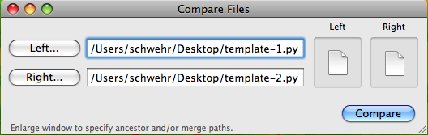
It seems to understand the layout of python code. Nice!
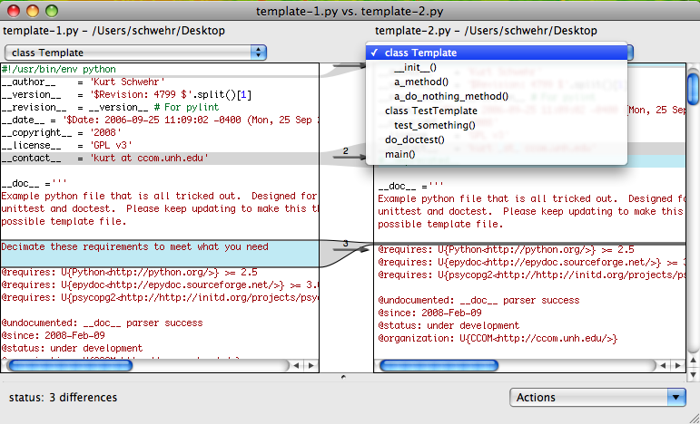
And you can then take an action for each chunk.
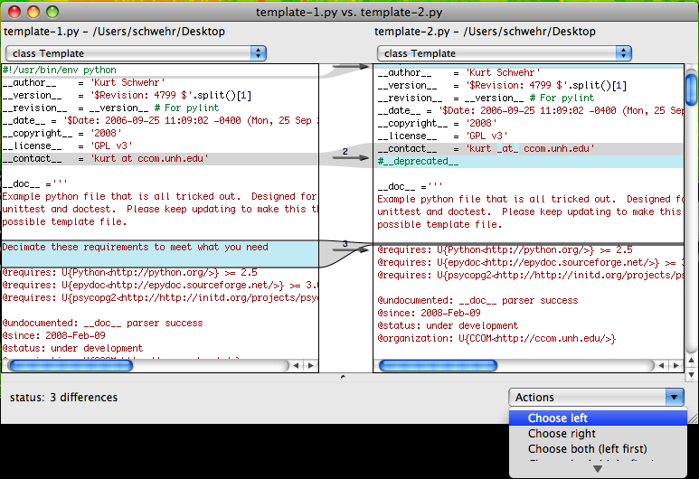
02.10.2008 19:16
django admin interface
I spent a little more time with django today. I've just looked
through chapter 6 with the admin interface. I don't want people
to be able to edit the AIS data. That just would not be good.
However, it does illustrate some of the look that I would like
to have.
Once you are logged on to the system, here is the initial view with users and the tables that have admin turned enabled. Here I only have the last_position/LastPosition with an admin interface.
The default view gives a quick sense of what is in the table. It uses the string representation that I defined for the LastPosition model.
Then I used the list_display attribute to give a better look.
You can click on the column headings to sort or flip the direction of sorting. This is pretty standard web or spreadsheet behavior that users expect.
The edit page illustrates that I've got some work to do for a better individual view. The position geometry comes out as the raw WKB Hex text. That and sog is confused. Not friendly to the user.
Once you are logged on to the system, here is the initial view with users and the tables that have admin turned enabled. Here I only have the last_position/LastPosition with an admin interface.
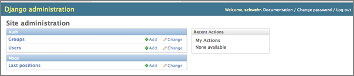
The default view gives a quick sense of what is in the table. It uses the string representation that I defined for the LastPosition model.
def __str__(self):
return '%s last position' % self.name
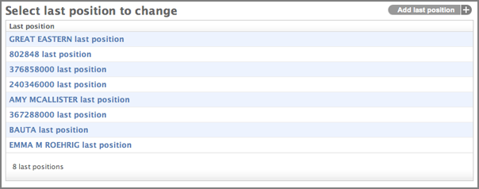
Then I used the list_display attribute to give a better look.
class Admin:
list_display = ('userid','name','cog','cg_timestamp')
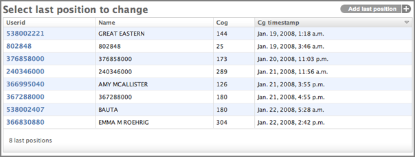
You can click on the column headings to sort or flip the direction of sorting. This is pretty standard web or spreadsheet behavior that users expect.
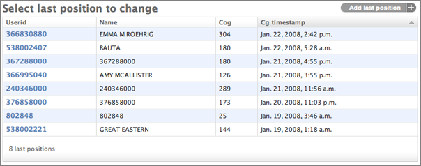
The edit page illustrates that I've got some work to do for a better individual view. The position geometry comes out as the raw WKB Hex text. That and sog is confused. Not friendly to the user.
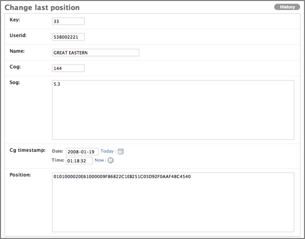
02.10.2008 11:20
Cardinal sighting
It's kind of like big foot. I saw a female cardinal
outside my window this morning. I was not quick enough with the
camera to catch it, so instead I've got a picture from wikipedia
(credit: Ken Thomas). I thought I had it, but looking at the picture,
I can't find it in the pine branches.
02.09.2008 16:15
How not to write python code
This article actually has a lot of create tips on how to write quality
python code despite what the title says.
How not to write Python code
Haven't actually used this one, but I am sure I will soon enough:
The article mentions documentation. Here is my take on a template/boiler plate for python files. For here, I've removed the blank lines, but please don't do that in your code. The resulting html from epydoc >= 3.0.1 is very usable. But I still am wondering if a better pylint score actually makes for better code. I kind of like variables that haveCapsLikeThis, but pylint definitely does not. What do people think of pylint??? I definitely like the module usage graph and it does find some trouble spots, but it really alters the way I code to get a good score.
How not to write Python code
Haven't actually used this one, but I am sure I will soon enough:
Use Pythonesque coding pattern This is very related to the previous item, obviously. Python has some well-known constructs to handle some situations. Get to know and understand them. An example: as you might know, Python has no switch/case construct. There's a very neat way to implement this though by simply using a dict and function objects (or lambda functions). An example:I also need to use isinstance(arg, MyClass).
def handle_one(): return 'one' def handle_two(): return 'two' def handle_default(): return 'unknown' cases = { 'one': handle_one, 'two': handle_two, 'three': lambda: 'three', } for i in ('one', 'two', 'three', 'four', ): handler = cases.get(i, handle_default) print handler() We're using the dict.get method here, which can take an optional 'default' argument. Pretty neat, huh?
The article mentions documentation. Here is my take on a template/boiler plate for python files. For here, I've removed the blank lines, but please don't do that in your code. The resulting html from epydoc >= 3.0.1 is very usable. But I still am wondering if a better pylint score actually makes for better code. I kind of like variables that haveCapsLikeThis, but pylint definitely does not. What do people think of pylint??? I definitely like the module usage graph and it does find some trouble spots, but it really alters the way I code to get a good score.
#!/usr/bin/env python
# Consider this template file public domain. The __license__ is just an example.
# Replace values as needed
__author__ = 'Kurt Schwehr'
__version__ = '$Revision: 4799 $'.split()[1]
__revision__ = __version__ # For pylint
__date__ = '$Date: 2006-09-25 11:09:02 -0400 (Mon, 25 Sep 2006) $'.split()[1]
__copyright__ = '2008'
__license__ = 'GPL v3'
__contact__ = 'kurt at ccom.unh.edu'
#__deprecated__
__doc__ ='''
Example python file that is all tricked out. Designed for epydoc,
unittest and doctest. Please keep updating to make this the best
possible template file. Decimate these requirements to meet what you need.
@requires: U{Python<http://python.org/>} >= 2.5
@requires: U{epydoc<http://epydoc.sourceforge.net/>} >= 3.0.1
@requires: U{psycopg2<http://http://initd.org/projects/psycopg2/>} >= 2.0.6
@undocumented: __doc__ parser
@since: 2008-Feb-09
@status: under development
@organization: U{CCOM<http://ccom.unh.edu/>}
@bug: epydoc --check complains about unittest additions
@bug: Bug two
@todo: logging, fuzzing, etc
@todo: To make your code executable after check-in (to allow for doc and unittest), do svn propset svn:executable ON yourfile.py
@todo: "svn propedit svn:keywords yourfile.py", then put in "Date Revision"
@todo: What to make of "pylint --with-line-length=150" ... does this really lead to better code?
@todo: Run pychecker on your files.
@see: U{python idioms<http://jaynes.colorado.edu/PythonIdioms.html>} - Read this before modifying any code here.
'''
Look for template.py in my next release of noaadata... I forgot to add it
to the MANIFEST.in this time around.
02.09.2008 11:59
CCOM makes PBS web page
CCOM (more specifically Larry and JHC) made the pbs.org web page: Tools
of Polar Research, Polar Icebreakers
An image of the Healy from the USCG:
The project discovered a seamount a couple years ago: UNH Prof. Discovers Seamount on Arctic Cruise [ceps.unh.edu] This image is from the ceps page and is hanging on the wall in the Chase Ocean Engineering Building.
An image of the Healy from the USCG:
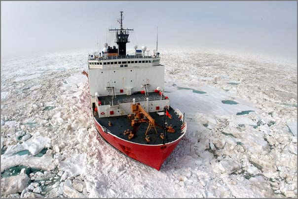
The project discovered a seamount a couple years ago: UNH Prof. Discovers Seamount on Arctic Cruise [ceps.unh.edu] This image is from the ceps page and is hanging on the wall in the Chase Ocean Engineering Building.
Previously charted as a small sea knoll, Mount Healy abruptly rises more than 3,000 meters from the floor of the Arctic Ocean.
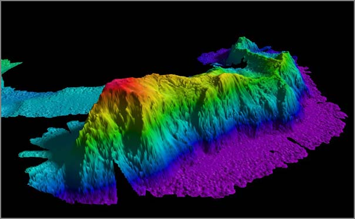
02.09.2008 07:56
noaadata 0.34 released
I've just released noaadata
0.34. This is the biggest diff between releases that I've had in a
long time. A number of critical deadlines are approaching in the next
two weeks. That has put some positive pressure to get things done.
Expect a number of new releases this month with big changes. The
change log:
- Real-time AIS works, but needs a little bit more tweaking to get time thresholding
- Dropped the .py for an initial batch of scripts including serial-logger, xy2kml, xy_pos_filter, and xymt2kml. Need to do the rest
- Moved from scripts to data subdir: gsc.dat, merg5.dat, sbnms-*.dat, stellwagen*.dat
- Created a contrib directory. Added doc from Maitland Bottoms
- Changed around the MANIFEST.in. Can anyone suggest a better way to build the MANIFEST.in?
- Working on switching from GPL v2 to v3
- Minor updates to the waterlevel2 message based on feedback from ACOE - additional datums
- Starting on updates for epydoc 3.0.1 - better front matter tagging in python files. e.g. see database.py
- database.py: added rebuild_track_lines and rebuild_last_position functions
- uscg.py: added __eq__ method and a return BitVector; can now rebuild the NMEA
- Renaming of the ais-db* and ais-port-forward command. Moved from scraps to scripts
- Moved aisxml2wxpy and aisxmlbinmsg2py from ais to scripts. They should not a part of the ais module!
- Added initial django-ais subdir that doesn't yet do anything
- Much improved fink info file. Still needs a lot of work
02.08.2008 10:18
A blog written in matlab code
Val pointed me to Loren's
blog that is written in matlab! That is is pretty cool. And she
is coming to visit CCOM today.
02.07.2008 17:00
Ship board laser ranging trial
Last week I blogged about Laser
Scanning for Hydrographic Vessels
This was presented at US Hydro 2007: P. Canter, R. Brennan, , A. Silva, J. Van Rens, Surface Imaging Capabilities on Marine Hydrographic Vessels
Check out how amazing this data looks!
An individual AtoN (Aid to Navigation):
Remember that this was collected from the a moving launch (the NOAA Bay Hydro) on the water.
For comparison, take a look at the area in Google Earth: norfolk-lidar-location.kmz
I hope that we will get to see this deployed on survey vessels that work in confined waterways.
This was presented at US Hydro 2007: P. Canter, R. Brennan, , A. Silva, J. Van Rens, Surface Imaging Capabilities on Marine Hydrographic Vessels
Check out how amazing this data looks!
An individual AtoN (Aid to Navigation):
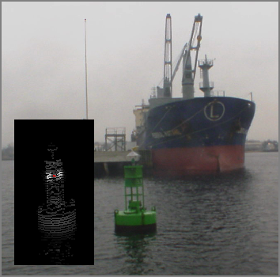
Remember that this was collected from the a moving launch (the NOAA Bay Hydro) on the water.
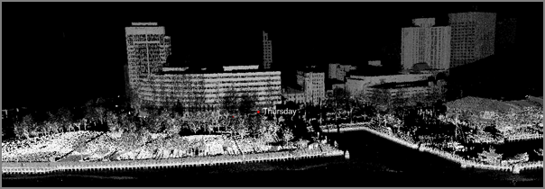
For comparison, take a look at the area in Google Earth: norfolk-lidar-location.kmz
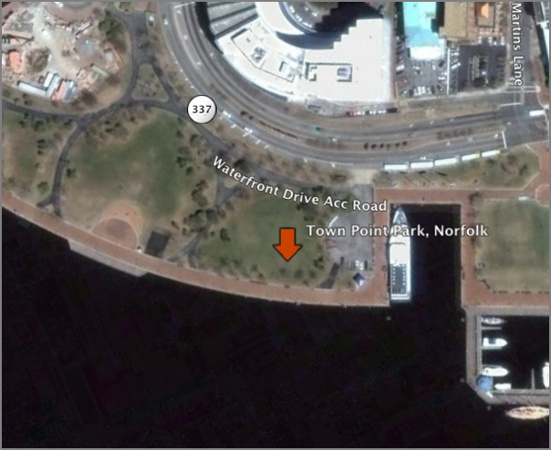
I hope that we will get to see this deployed on survey vessels that work in confined waterways.
02.07.2008 16:08
GeoTypes for parsing WKB hex strings
I need to be able to convert WKB (well-known-binary) strings returned
by postgis without AsText to usable geometry. Thankfully, there is
GeoTypes, which I just added to the fink 10.4 and 10.5 trees. If you
leave off the AsText, you get the raw hex string like this:
0020000001000010E6C051D30925D1DA0B4044A79AE924F228Here is my demo code:
#!/usr/bin/env python
import psycopg2
import psycopg2.extensions
import GeoTypes
#
factory = GeoTypes.OGGeoTypeFactory()
parser = GeoTypes.HEXEWKBParser(factory)
#
c = psycopg2.connect("dbname='ais' user='schwehr'")
cu = c.cursor()
#
cu.execute('SELECT position FROM position LIMIT 1;')
row = cu.fetchone()
print row[0]
#
parser.parseGeometry(row[0])
geom = factory.getGeometry()
#
print type(geom)
print geom
print 'x:',geom.getX()
print 'y:',geom.getY()
#
print 'Should match...'
cu.execute('SELECT AsText(position) FROM position LIMIT 1;')
row = cu.fetchone()
print row[0]
When run, it returns this:
0020000001000010E6C051D30925D1DA0B4044A79AE924F228
<class 'GeoTypes._OGPoint.OGPoint'>
GeometryFromText('POINT(-71.297433 41.309415)',4326)
x: -71.2974333333
y: 41.309415
Should match...
POINT(-71.2974333333333 41.309415)
02.07.2008 14:02
Having django generate SQL database tables
To see what would happen, I had django try to generate the SQL
database tables for postgresql based on the classes that it build from
the database inspection. Completing the circle. That is a lot of
"NOT NULL"'s. This command only writes out the SQL without actually
altering the database.
Compare that to the the track_lines table:
% python manage.py sqlall msgs
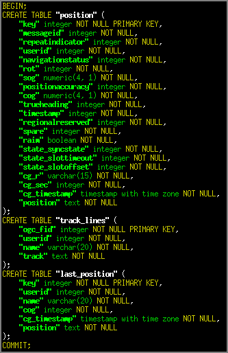
Compare that to the the track_lines table:
ais=# \d track_lines
Table "public.track_lines"
Column | Type | Modifiers
=========+=====================--+===============================================================
ogc_fid | integer | not null default nextval('track_lines_ogc_fid_seq'::regclass)
userid | integer |
name | character varying(20) |
track | geometry |
Indexes:
"track_lines_pkey" PRIMARY KEY, btree (ogc_fid)
Check constraints:
"enforce_dims_track" CHECK (ndims(track) = 2)
"enforce_geotype_track" CHECK (geometrytype(track) = 'LINESTRING'::text OR track IS NULL)
"enforce_srid_track" CHECK (srid(track) = 4326)
02.07.2008 09:05
django inspectdb
I just gave django's database inspection a try. I spent a while
chasing a strange error about trying to import settings. But I
started over and this worked...
% django-admin.py startproject mysite % cd mysite % python manage.py runserverYup... it runs. Now edit the setings.py:
% grep DATA settings.py DATABASE_ENGINE = 'postgresql_psycopg2' DATABASE_NAME = 'ais' DATABASE_USER = '' DATABASE_PASSWORD = '' DATABASE_HOST = '' DATABASE_PORT = ''Now I am ready to do the inspection/code-generation:
% python manage.py inspectdb > foo.pyThe resulting code looks like this:
from django.db import models
#
class Position(models.Model):
key = models.IntegerField(primary_key=True)
messageid = models.IntegerField()
repeatindicator = models.IntegerField()
userid = models.IntegerField()
navigationstatus = models.IntegerField()
rot = models.IntegerField()
sog = models.FloatField(max_digits=4, decimal_places=1)
positionaccuracy = models.IntegerField()
cog = models.FloatField(max_digits=4, decimal_places=1)
trueheading = models.IntegerField()
timestamp = models.IntegerField()
regionalreserved = models.IntegerField()
spare = models.IntegerField()
raim = models.BooleanField()
state_syncstate = models.IntegerField()
state_slottimeout = models.IntegerField()
state_slotoffset = models.IntegerField()
cg_r = models.CharField(maxlength=15)
cg_sec = models.IntegerField()
cg_timestamp = models.DateTimeField()
position = models.TextField() # This field type is a guess.
class Meta:
db_table = 'position'
#
class LastPosition(models.Model):
key = models.IntegerField(primary_key=True)
userid = models.IntegerField()
name = models.CharField(maxlength=20)
cog = models.IntegerField()
sog = models.TextField() # This field type is a guess.
cg_timestamp = models.DateTimeField()
position = models.TextField() # This field type is a guess.
class Meta:
db_table = 'last_position'
A couple thoughts on the output. First, I would have expected to see
the Decimal class being used for the SQL decimal types. Maybe that is
what lives behind the "models.FloatField". I am not surprised that it
didn't get geometry columns. I would only expect GeoDjango to get
that. I am a little surprised that it didn't figure out sog (speed
over ground) in last_position:
% psql ais
ais=# \d last_position
Table "public.last_position"
Column | Type | Modifiers
============--+===========================--+============================================================
key | integer | not null default nextval('last_position_key_seq'::regclass)
userid | integer |
name | character varying(20) |
cog | integer |
sog | real |
cg_timestamp | timestamp without time zone |
position | geometry |
Indexes:
"last_position_pkey" PRIMARY KEY, btree ("key")
Check constraints:
"enforce_dims_position" CHECK (ndims("position") = 2)
"enforce_geotype_position" CHECK (geometrytype("position") = 'POINT'::text OR "position" IS NULL)
"enforce_srid_position" CHECK (srid("position") = 4326)
NOTE: If you name your django project the same as another other python
module that is on your path, you will get a strange error like this as django
tries to find the settings.py file from that other module.
Traceback (most recent call last):
File "manage.py", line 11, in <module>
execute_manager(settings)
File "/sw/lib/python2.5/site-packages/django/core/management.py", line 1672, in execute_manager
execute_from_command_line(action_mapping, argv)
File "/sw/lib/python2.5/site-packages/django/core/management.py", line 1563, in execute_from_command_line
from django.utils import translation
File "/sw/lib/python2.5/site-packages/django/utils/translation/__init__.py", line 3, in
if settings.USE_I18N:
File "/sw/lib/python2.5/site-packages/django/conf/__init__.py", line 28, in __getattr__
self._import_settings()
File "/sw/lib/python2.5/site-packages/django/conf/__init__.py", line 55, in _import_settings
self._target = Settings(settings_module)
File "/sw/lib/python2.5/site-packages/django/conf/__init__.py", line 83, in __init__
raise EnvironmentError, "Could not import settings '%s' (Is it on sys.path? Does it have syntax errors?): %s" % (self.SETTINGS_MODULE, e)
EnvironmentError: Could not import settings 'ais.settings' (Is it on sys.path? Does it have syntax errors?): No module named settings
02.06.2008 17:44
magicdate 0.1.2
Rob De Almeida was kind enough to take some additional suggestions
today for magicdate, which is
now at 0.1.2:
I've just uploaded a new version to the Cheeseshop. The syntax now allows the combined use of x weeks ago x days ago x hours ago x minutes ago x seconds ago So it works with your examples but also "1 week and 2 days ago", "2 days, 1 hour and 34 seconds ago", etc.Talk about turn around time. Go Rob! I can now do things like this:
ais-db-rebuild-cache-tables --all --track-start-time='2008-01-22' \ --last-position-start-time='1 hour ago'See: http://dealmeida.net/blog/magicdate.html
02.06.2008 08:33
geodjango
I've been reading the django book.
It's great both from a web applications perspective, but also for just
learning more about python. I am close to redoing my previous example
such that it does not follow the "dumb" design strategy. There is
direct database support in django and I will try to use the templating
engine.
I was wondering if there is postgis support for django in addition to postgresql. The answer is a resounding "yes": GeoDjango. Now I really have motivation to get libgeos3 figured out for fink. I won't likely get to GeoDjango for a while, but it is nice to know it is there.
I was wondering if there is postgis support for django in addition to postgresql. The answer is a resounding "yes": GeoDjango. Now I really have motivation to get libgeos3 figured out for fink. I won't likely get to GeoDjango for a while, but it is nice to know it is there.
02.05.2008 21:17
Python logging module and daemons
I just started working with python's logging
module. Very powerful. It is going to take a while to get really
comfortable with how it works, but why reinvent the wheel?
So far I ran into two funky stumbling blocks. The first is that the default setup is supposed to send all logging messages to stderr, right? I don't see any output until I get to "warn." I am explicitly setting the level to 0 with this:
KEY POINT: Do all your forking first. Only then initialize your logging.
So far I ran into two funky stumbling blocks. The first is that the default setup is supposed to send all logging messages to stderr, right? I don't see any output until I get to "warn." I am explicitly setting the level to 0 with this:
logging.basicConfig(filename = options.log_file
, level = options.log_level
)
The second problem totally caught me off guard. At first I
just got zero output from logging in ais-port-forward when
I switched from my testing area to starting it from an init.d
script. The level did not matter. Then I opened a file down
farther in my code to see if I could write anything. And boom!
I got both my writes to the file AND the logging data. Turns
out that you do not want to detach your daemon after you
initialize logging. The file descriptors get all wonky. With
my daemon.py in noaadata, I attach stdout and stderr to /dev/null.
I think that is where logging also gets sent. This code will
be in the next release of noaadata inside aisutils/daemon.py and
scripts/ais-port-forward.
KEY POINT: Do all your forking first. Only then initialize your logging.
02.05.2008 17:13
Federal budget in terms of the sciences
Physical Sciences Win Out Over Biomedicine in 2009 Budget Proposal [sciencemag.org]
... But NSF rocked the ocean sciences community by deciding to pull its $331 million Ocean Observatories Initiative (OOI) off the table pending a final review later this year. ...There are too many interesting points in the article to quote any more. You will have to read it yourself.
02.05.2008 13:45
AIS and tide station pictures
I paid a visit to the Jackson Estuarine Lab today to see what is up
with the tide station that is currently down. I didn't figure out
what is wrong, but I got some photos of the current setup.
This is the view out the window and the AIS antenna (a J-Pole) is on the right hand side of the image.
This is the view of the shuttle box that does all the data logging. It is mounted agains one of the roof beams.
This the tide station on the currently very soggy pier.
Looking at the screen, I just don't believe that this station is working right when it says that the water level is 0.00 m and the water temp is -8 C.
This is the view out the window and the AIS antenna (a J-Pole) is on the right hand side of the image.
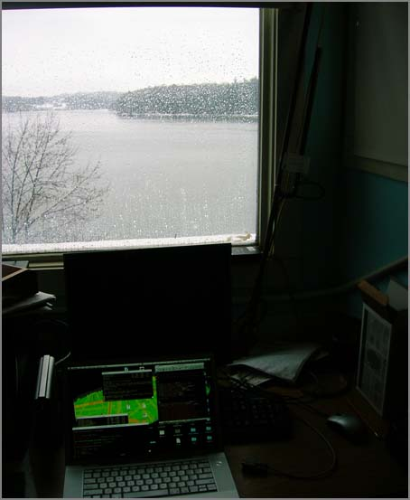
This is the view of the shuttle box that does all the data logging. It is mounted agains one of the roof beams.
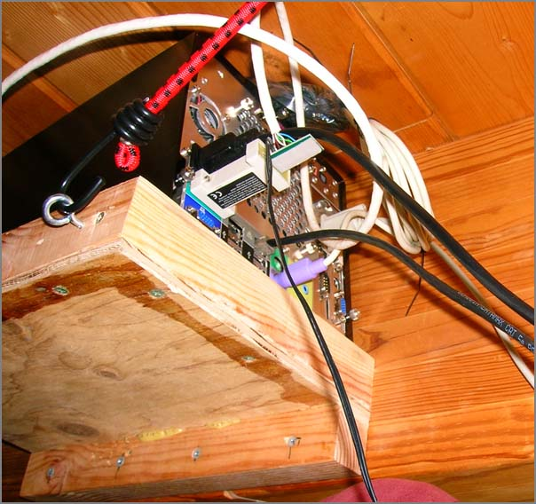
This the tide station on the currently very soggy pier.
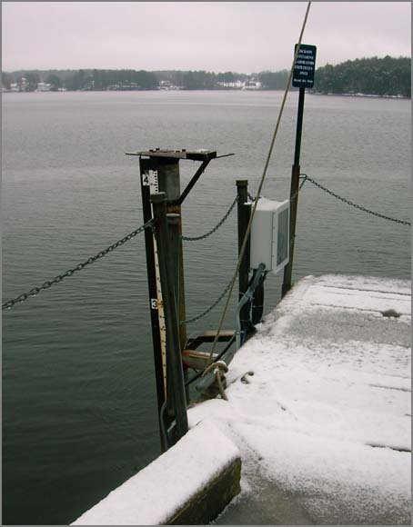
Looking at the screen, I just don't believe that this station is working right when it says that the water level is 0.00 m and the water temp is -8 C.
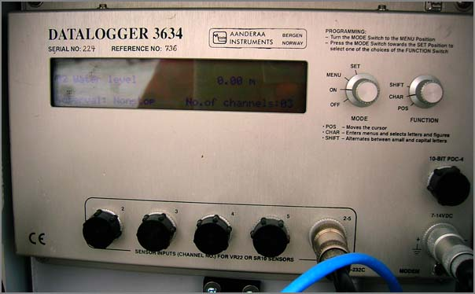
02.04.2008 19:55
lxml 2.0 trouble
I clearly have some work to do to track down some issues with
yesterday's upgrade to lxml 2.0. I ran through my unittests first, but
I don't have unittests in this section of noaadata.
Traceback (most recent call last): File "./make_waterlevel_ais.py", line 38, instations = Stations.ActiveStations(forceCache=True) File "/Users/schwehr/Desktop/production/src/noaadata/noaadata/stations.py", line 233, in __init__ File "lxml.etree.pyx", line 2342, in lxml.etree.parse File "parser.pxi", line 1700, in lxml.etree._parseDocument File "parser.pxi", line 1732, in lxml.etree._parseMemoryDocument File "parser.pxi", line 1633, in lxml.etree._parseDoc File "parser.pxi", line 785, in lxml.etree._BaseParser._parseDoc File "parser.pxi", line 450, in lxml.etree._ParserContext._handleParseResultDoc File "parser.pxi", line 534, in lxml.etree._handleParseResult File "parser.pxi", line 476, in lxml.etree._raiseParseError lxml.etree.XMLSyntaxError: Namespace prefix soapenv on Envelope is not defined, line 1, column 54 Traceback (most recent call last):
02.04.2008 10:47
emacs tramp - edit remote files via ssh
This works great with one of my remote linux dataloggers, but doesn't
seem to work with an XServer running Mac OSX 10.4 server. No idea why
the mac does not work. In any case, tramp is an emacs
module that will use scp/ssh to remotely edit files.
/ssh:username@myhost.unh.edu:/home/schwehr/projects/noaadata/scripts/MakefileIt is a little slow loading up files, but 'dired' even works. This is going to make working on remote servers much easier. I am not really a fan of VNC and RemoteDesktop. And lately X11 remote displays break all the time with the network we have around here.
02.04.2008 09:15
pylint validation of source code
I just tried the latest version of pylint on my serial logger code. Ouch!
I am not very close to the python coding style guide. It does not like
how I redefine the doc string, but that is important for good quality
epydoc output.
pylint serial_logger.py --max-line-length=200
No config file found, using default configuration
************* Module serial_logger
C: 1: Missing docstring
W: 1: Redefining built-in '__doc__'
C: 34:createDaemon: Invalid name "createDaemon" (should match [a-z_][a-z0-9_]{2,30}$)
C: 39:createDaemon: Invalid name "e" (should match [a-z_][a-z0-9_]{2,30}$)
C: 48:createDaemon: Invalid name "e" (should match [a-z_][a-z0-9_]{2,30}$)
W: 52:createDaemon: Access to a protected member _exit of a client class
W: 55:createDaemon: Access to a protected member _exit of a client class
C: 64:createDaemon: Invalid name "fd" (should match [a-z_][a-z0-9_]{2,30}$)
W: 67:createDaemon: Except doesn't do anything
C: 78:dateStr: Invalid name "dateStr" (should match [a-z_][a-z0-9_]{2,30}$)
C: 84:dateStr: Operator not preceded by a space
t=time.gmtime()
^
C: 84:dateStr: Invalid name "t" (should match [a-z_][a-z0-9_]{2,30}$)
C: 85:dateStr: Operator not preceded by a space
d='%04d-%02d-%02d' % t[:3]
^
C: 85:dateStr: Invalid name "d" (should match [a-z_][a-z0-9_]{2,30}$)
W: 89:start: Redefining name 'options' from outer scope (line 217)
C: 95:start: Comma not followed by a space
ser = serial.Serial(options.port,options.baud,timeout=options.timeout)
And the summary of messages by catagory.
+===========+=======+ |type |number | +===========+=======+ |convention |49 | +===========+=======+ |refactor |2 | +===========+=======+ |warning |5 | +===========+=======+ |error |0 | +===========+=======+Pylint gave me my initial evalation:
Your code has been rated at 0.17/10Ouch! After a bit of tweaking to my code, pylint tells me this...
Your code has been rated at 8.39/10 (previous run: 8.05/10)I don't think my code could be any better at this point, so I am not going to try for a 10/10.
02.03.2008 13:54
pythonpaste and featureserver in fink
I've added python paste and featureserver to the fink 10.5
tree. Rob and I are currently using featureserver (but one version
back) on one of our servers with success. Please report any troubles
back to me. I am also looking for a replacement DescUsage, so
if you want to write something, send it over to me!
02.02.2008 19:34
ais django example
I have finally made my first demo in django while I read the django book. My demo reads my
ais last_position table and make a simple summary page. There are
some seriously weird values in my test database, so just ignore those.
Also ignore the fact that this test database is not live and a blend
of two dataset.
from django.http import HttpResponse
import datetime
#
def last_position(request):
import psycopg2 as psycopg
connectStr = "dbname='ais' user='schwehr' host='localhost'"
cx = psycopg.connect(connectStr)
cu = cx.cursor()
q = 'SELECT userid,name,cog,cg_timestamp,AsText(position) FROM last_position ORDER by userid;'
cu.execute(q)
htmlLines=['<html><body>',]
htmlLines.append('<table border="1">')
htmlLines.append('<tr bgcolor="orange"><td>userid</td><td>name</td><td>cog (°)</td><td>timestamp (UTC)</td><td>position</td></tr>')
rownum=0
for row in cu.fetchall():
if rownum%2==0: htmlLines.append('<tr bgcolor="gray">')
else: htmlLines.append('<tr>')
rownum+=1
userid,name,cog,cg_timestamp,pos = row
htmlLines.append('<td>'+str(userid)+'</td>')
htmlLines.append('<td>'+str(name)+'</td>')
htmlLines.append('<td>'+str(cog)+'</td>')
htmlLines.append('<td>'+str(cg_timestamp)+'</td>')
htmlLines.append('<td>'+str(pos)+'</td>')
htmlLines.append('</tr>')
htmlLines.append('</table>')
htmlLines.append('</body></html>')
html = '\n'.join(htmlLines)
print html
return HttpResponse(html)
Here is my urls.py:
from django.conf.urls.defaults import *
import ablog.views
urlpatterns = patterns(
''
,(r'^vessels/latest/$',ablog.views.last_position)
)
And here is the output if I do "open http://127.0.0.1:8000/vessels/latest/" on my development mac:
| userid | name | cog (°) | timestamp (UTC) | position |
| 250000484 | ASPHALT SEMIOLE | 320 | 2008-01-01 18:18:47 | POINT(-70.7844833333333 43.1009666666667) |
| 356575000 | SALVIA EXPRESS | 335 | 2008-01-10 18:54:14 | POINT(-70.7828666666667 43.1004166666667) |
| 366830880 | EMMA M ROEHRIG | 221 | 2008-01-20 21:51:23 | POINT(-70.7992483333333 43.10917) |
| 366896270 | 366896270 | 311 | 2008-01-12 19:45:09 | POINT(-70.7988133333333 43.1104583333333) |
| 366995040 | AMY MCALLISTER | 310 | 2008-01-20 09:18:38 | POINT(-70.7942833333333 43.1077333333333) |
| 367006540 | RHEA I BOUCHARD | 309 | 2008-01-08 06:05:28 | POINT(-70.7953333333333 43.10862) |
| 367006610 | FREDERICK BOUCHARD | 315 | 2008-01-05 21:56:57 | POINT(-70.7850716666667 43.102265) |
| 367033650 | NARRAGANSETT | 307 | 2008-01-11 13:22:37 | POINT(-70.7953533333333 43.1088766666667) |
| 367288000 | 367288000 | 180 | 2008-01-21 16:55:42 | POINT(-70.6925883333333 42.9944833333333) |
| 367307850 | ATLANTIC COAST | 308 | 2008-01-05 03:51:55 | POINT(-70.7960283333333 43.1086883333333) |
| 376858000 | 376858000 | 112 | 2008-01-16 07:52:50 | POINT(-70.68915 43.0374) |
| 403509376 | 403509376 | 166 | 2008-01-10 01:48:10 | POINT(145.273013333333 -108.789706666667) |
| 538001647 | TYCO DECISIVE | 306 | 2008-01-02 19:40:18 | POINT(-70.7862116666667 43.102575) |
| 538001946 | PANAM FLOTA | 4 | 2008-01-09 16:05:33 | POINT(-70.6886916666667 43.0078733333333) |
| 538002221 | GREAT EASTERN | 315 | 2008-01-18 06:45:58 | POINT(-70.784575 43.1018933333333) |
| 538002407 | BAUTA | 268 | 2008-01-17 03:07:35 | POINT(-70.6814516666667 43.006965) |
| 565631000 | 565631000 | 347 | 2008-01-15 09:44:56 | POINT(-70.7827666666667 43.0995666666667) |
| 576045000 | AMBASSADOR | 345 | 2008-01-09 05:03:33 | POINT(-70.7826416666667 43.10118) |
| 636012377 | ALRAR | 329 | 2008-01-13 20:59:35 | POINT(-70.7826333333333 43.1002166666667) |
| 805306368 | 805306368 | 323 | 2008-01-04 17:47:33 | POINT(1.4209 0.600751666666667) |
| 1006765056 | 1006765056 | 0 | 2008-01-05 18:58:31 | POINT(0.873813333333333 0.40992) |
02.02.2008 10:45
US Hydro papers online
Just realized that most of the US Hydro papers are online. A couple
of the links are broken, but this is a great resource.
2007: http://www.thsoa.org/us07papers.htm
US Hydro References
There is even a link to the Army Corps of Engineers (ACOE) "Engineering and Design - Hydrographic Surveying" EM 1110-2-1003
2007: http://www.thsoa.org/us07papers.htm
US Hydro References
There is even a link to the Army Corps of Engineers (ACOE) "Engineering and Design - Hydrographic Surveying" EM 1110-2-1003
02.01.2008 14:12
JPL Rover Pictures - 50 years
Judy has some great pictures from JPL of the 50th anniversary of Explorer 1.
Not too shabby. [stochasticgirl]
Here is a picture by Judy of the MSL mockup.
Not too shabby. [stochasticgirl]
Here is a picture by Judy of the MSL mockup.
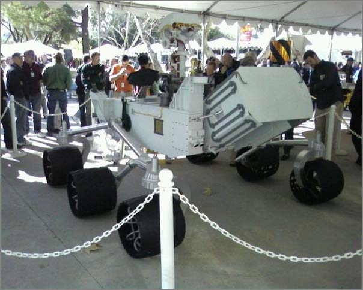
02.01.2008 13:36
isightcapture
I've played with the external isights for a while and was frustrated. The device often got wedged. I was capturing every few seconds forever, but it would die every couple of days requiring me to remove the device from the cable and plug it back in. Are things better on 10.5?
isightcapture
Wouldn't it be nice to be able to just grab a frame from the camera on a mac from within a python application and just have it work. Apple, is this possible? Or even just include a capture program with the OS? SGI did this back with the Indy in 1996. I really am not interested in the whole quicktime library. Remember the BTB848 driver? How about a /dev/camera0ppm and /dev/camera0png? I know I've blogged about this before, but it should be pretty easy for Apple to do.
isightcapture
fink install coreutils-default isightcapture `date +'%Y%m%d-%H%M'`.jpg isightcapture -t png `date +'%Y%m%d-%H%M'`.png
Wouldn't it be nice to be able to just grab a frame from the camera on a mac from within a python application and just have it work. Apple, is this possible? Or even just include a capture program with the OS? SGI did this back with the Indy in 1996. I really am not interested in the whole quicktime library. Remember the BTB848 driver? How about a /dev/camera0ppm and /dev/camera0png? I know I've blogged about this before, but it should be pretty easy for Apple to do.
02.01.2008 12:43
Coast Pilot in ECS and related software
Briana has been trying out several commercial offerings of ECS system
at the low end of the price range. We have been having fun checking
out "Coastal Explorer" by Rose
Point. These are my quick first impressions from the desktop as Briana
navigated through the software interface.
As a side note, for the Mac, I know of MacENC and MacGPS Pro. Are there other ENC type software packages out there for the Mac? Any for Linux?
The program is easy to use. It is able to attach to a number of AIS ship tracking sources at one time. We hooked it up to our feed using a TCP/IP socket to another computer and right off had vessel traffic showing up. Nice!
It is a little crazy at the scale showing the entire US (sorry Alaska), but it gets the point across. We then zoomed into New York. One you get in close, you can see vessel names and the clutter gets more manageable.
Coastal Explorer is able to go out to the Internet and grab tide and current data. I didn't trace this with something like tcpdump or wireshark, so I am not sure how they do this. It could be a SOAP or OpenDAP connection to NOAA. It is also possible that they data is getting filtered by another provider who pulls the data from NOAA.
To my untrained eye, the ENC vector data is rendered very nicely.
The general cruise mode has access to the contents of the NOAA Coast Pilot volumes. On the right are key features and bottom has the text and paragraph numbers.
Briana has put together a new Chart of the Future project page. On that page, we have a screenshot of our research prototype of the Digital Coast Pilot. We have been researching both the front end User Interface (UI; 3D graphics/UI and 2D UI) and the back end XML representation. My hope is that with some work, there will be a standard baseline XML. From there, vendors could either apply the content directly or add value how they see fit.
As a side note, for the Mac, I know of MacENC and MacGPS Pro. Are there other ENC type software packages out there for the Mac? Any for Linux?
The program is easy to use. It is able to attach to a number of AIS ship tracking sources at one time. We hooked it up to our feed using a TCP/IP socket to another computer and right off had vessel traffic showing up. Nice!
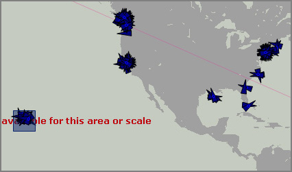
It is a little crazy at the scale showing the entire US (sorry Alaska), but it gets the point across. We then zoomed into New York. One you get in close, you can see vessel names and the clutter gets more manageable.
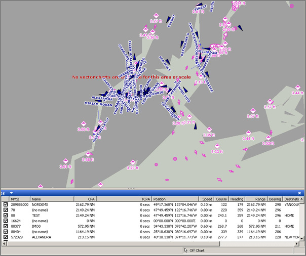
Coastal Explorer is able to go out to the Internet and grab tide and current data. I didn't trace this with something like tcpdump or wireshark, so I am not sure how they do this. It could be a SOAP or OpenDAP connection to NOAA. It is also possible that they data is getting filtered by another provider who pulls the data from NOAA.
To my untrained eye, the ENC vector data is rendered very nicely.
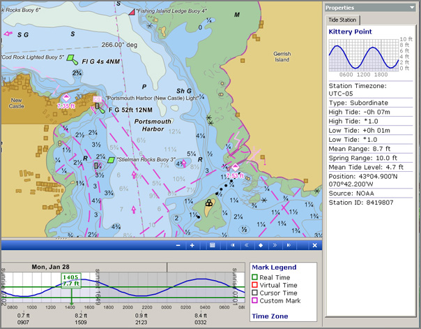
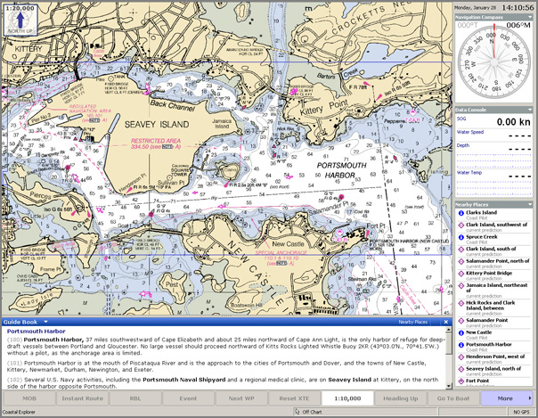
The general cruise mode has access to the contents of the NOAA Coast Pilot volumes. On the right are key features and bottom has the text and paragraph numbers.
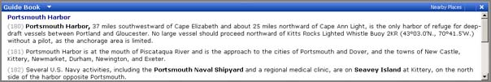
Briana has put together a new Chart of the Future project page. On that page, we have a screenshot of our research prototype of the Digital Coast Pilot. We have been researching both the front end User Interface (UI; 3D graphics/UI and 2D UI) and the back end XML representation. My hope is that with some work, there will be a standard baseline XML. From there, vendors could either apply the content directly or add value how they see fit.
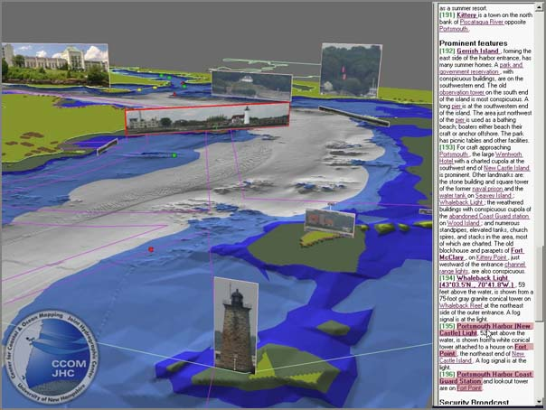
02.01.2008 11:44
gdalwarp
Thanks to help from Rob, I was able to take a backscatter file from
Luciano and convert from UTM to Geographic. I ran it through two
paths: ImageView in IVS Fledermaus and gdal. I had trouble with getting
the image transparent and exporting to KML from ImageView gave me a tif
inside the kmz that would not display in GoogleEarth. I converted the tif
to a transparent png after unzipping the kmz. Then I had the image below.
Rob set me straight on using gdalwarp. The associated tfw with the original
geotif did not tell gdal the source projection...
0.25000 0 0 -0.25000 360246.83000 4771048.51000Looking in epsg, you can see the NH coast area is in this UTM project:
# WGS 84 / UTM zone 19N <32619> +proj=utm +zone=19 +ellps=WGS84 +datum=WGS84 +units=m +no_defs <>
gdalwarp -s_srs EPSG:32619 -t_srs EPSG:4326 backscatter-utmz19.tif backscatter-4326.tif
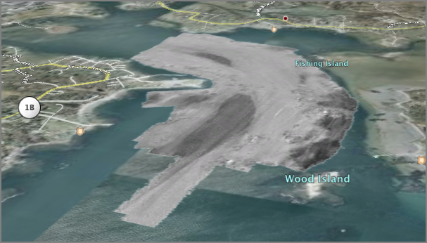
02.01.2008 11:25
Laser scanning for Hydrographic Vessels
This was a project led by Rick Brennan last year that had excellent
results.
Surface Imaging Capabilities on Marine Hydrographic Vessels
Surface Imaging Capabilities on Marine Hydrographic Vessels
In a combined effort of the National Oceanic and Atmospheric Administration and private industry (Applanix and Riegl), two different but complimentary technologies were tested in the marine survey field to find a more efficient, higher-accuracy and safer alternative for traditional shoreline verification methods. This article describes the tests and the encouraging good results with this videogrammetry and laser scanning technology. ... Results Results from this initial test in an urban port setting were very encouraging. While sea conditions for these tests were ideal, there were no noticeable motion artefacts found in the data. Riegl has found over and over again that 10-centimetre point cloud accuracy is quite typical for their scanner data integrated with an IMU. In this Norfolk test, we have accomplished better results: less than 5 centimetres (1 sigma) with respect to reference objects, after post-processing. This is typically not range-dependent under 1,000 metres. . It was found that in this environment it was rarely necessary to position things at distances of greater than 250-300 metres. The resolution of these systems was impressive, providing almost photographic quality point clouds. The resolution was such that cleats, bits and other pier-side hardware could easily be identified from the point cloud. . A data logger on the laser system recorded raw data. The Riegl processing includes an extraction step that produces a file with points referenced to the laser's coordinate system. This export file is then merged with the POS MV's file of the smooth best estimated trajectory using the Applanix utility POS point cloud. The merge is based on GPS time to the microsecond. . Summary and Conclusion Two different but complementary technologies were tested aboard the NOAA vesselBay Hydrographerin an effort to find a more efficient, higher accuracy and safer alternative for traditional shoreline verification. Both systems performed well, were relatively easy to integrate into the existing hydrographic suite of equipment and provided a means of positioning various items from a boat at a safe distance offshore. The OCR capabilities of the videogrammetry system have great productivity potential for surveying port facility infrastructure. The long-range laser system holds promise for those areas where the shoreline structure is entirely natural and items such as rocks and islets dominate the survey. Each provides benefits where the other is weakest (i.e. using the video to classify features in the point cloud for which there may be insufficient data). The final result of this experiment is the production of what will inevitably become the nautical chart of the future, a merge of previously acquired Norfolk Harbor airborne laser data with the vessel-based laser data. The 2D rendering in Figure 4 does not do it justice; however, the picture is still quite stunning. Visualisation in three dimensions, on a high-definition colour monitor is truly impressive. ...
02.01.2008 11:18
Digipilot
From Digipilot - a New Way of Voyage Planning [Hydr Internationa]
HP1D - >Digipilot [hydro.nl]
Digipilot is an official Digital Nautical Publication, developed and issued by the Hydrographer of the Royal Netherlands Navy. Digipilot provides the mariner with the necessary information to plan his voyage in an interactive and versatile manner. It contains Sailing Directions and supplementary Port Information in various interactive geographic and thematic layers, but also tidal information, Deep Draught Planning Guide (Greenwich Buoy to Europoort) and the Mariners Routing Guide for the Southern North Sea. The product covers the Netherlands and Belgian coasts including the main inland waterways up to and including the ports of Antwerpen (Belgium) and Emden (Germany). The content of this publication has been derived from traditional existing paper nautical publications issued by the Hydrographer of the Royal Netherlands Navy and contains data derived from additional sources. Digipilot is an official equivalent of paper publications HP1 (Netherlands Coast Pilot) and HP33 (tide tables and stream atlases) in accordance with SOLAS V2.2 and SOLAS V19.2.1.5. It may replace these traditional paper publications provided that appropriate back-up arrangements are available (e.g. print facility or 2nd installed program).There is a demo, but I am behind a slow network link at the moment. Demo Digipilot
02.01.2008 08:36
Dealing with OSX 10.5 X11 Applications menu
Apple has yet to apply some basic fixes to the 10.5 X11 package. Here
is a quick workaround for the inability of Application menu items to
take parameters. The trick is to make a shell script in your ~/bin
directory (or anywhere else that you want). Inside the script, call
the program with the arguments that you want. I also want the same
script to pass through any arguments I give it on the command line.
Therefore, I added "$*" to the call. The * means all arguments passed to
the script. For xterm here is what I have:
/bin/xterm". Now I
don't have to stare at obnoxious black text with white backgrounds.
The other option is to put these in preferences into the X environment.
#!/bin/bash xterm -r -sl 1000 -j -sb $* &For emacs, I like a certain font:
#!/bin/bash /sw/bin/emacs -fn 6x13 -bg black -fg white $* &Then in the X11 Applications menu, select "Customize". Then select the terminal and press "Duplicate". Change the Command by double clicking it and put in "/Users/
echo "xterm*geometry: 80x40" | xrdb -merge echo "xterm*foreground: white" | xrdb -merge echo "xterm*background: black" | xrdb -merge echo "emacs*foreground: white" | xrdb -merge echo "emacs*background: black" | xrdb -merge echo "emacs*font: 6x13" | xrdb -mergeYou can also create a ~/.Xresources file which I believe (but have not tested) Apple's xinitrc still respects.
! Is the comment character ! XTerm settings that are easier on the eyes xterm*background: black xterm*foreground: wheat xterm*cursorColor: orchid xterm*scrollBar: true xterm*reverseWrap: true xterm*eightBitInput: false !xterm*titleBar: falseRemember that color names are defined in rgb.txt, which seems to be in /usr/X11/share/X11/rgb.txt on my system.